2022springboot自学笔记
Spring Boot 整合 Web 开发
Json
web中JSON框架的大致介绍
- 三大主流框架
- jackson
- gson
- fastjson
- 序列化和反序列化
- 序列化：对象->JSON(响应JSON)
- 反序列化：JSON->对象(请求参数是JSON)
- springmvc框架中，jackson和gson都已经自动配置好了,只需要添加依赖就能使用。Fastjson则需要开发者手动配置HttpMessageConverter
- HttpMessageConverter：
- 这是个接口
- 是个转换器：对象->JSON,JSON->对象
- 所有的JSON工具都会提供各自的HttpMessageConverter
- jackson:MappingJackson2HtttpMessageConverter
- gson:GsonHttpMessageConverter
- fastjson:
第一个例子
创建一个User实体类、
public class User { private Integer id; private String username; private String address; // @JsonFormat(pattern = "yyyy-MM-dd") private Date birthday; @Override public String toString() { return "User{" + "id=" + id + ", username='" + username + '\'' + ", address='" + address + '\'' + ", birthday=" + birthday + '}'; } public Date getBirthday() { return birthday; } public void setBirthday(Date birthday) { this.birthday = birthday; } public Integer getId() { return id; } public void setId(Integer id) { this.id = id; } public String getUsername() { return username; } public void setUsername(String username) { this.username = username; } public String getAddress() { return address; } public void setAddress(String address) { this.address = address; } }创建一个UserController
//@Controller @RestController//==Controller+ResponseBody public class UserController { // @ResponseBody @GetMapping("/user") public List<User> getAllUser(){ List<User> users=new ArrayList<>(); for (int i =0;i<10;i++){ User user = new User(); user.setAddress("www.lcdzzz.com>>"+i); user.setUsername("lcdzzz>>"+i); user.setId(i); user.setBirthday(new Date()); users.add(user); } return users; } }运行结果：

其中，User类中可以有
@JsonProperty()这个注解，用来指定属性序列化或反序列化时的名称，默认名称就是属性名。value改变显示的值，index（优先级）改变显示的顺序。@JsonProperty(value = "aaaage",index = 99)//指定属性序列化或反序列化时的名称，默认名称就是属性名 private Integer id; @JsonProperty(index = 98) private String username; @JsonProperty(index = 97) private String address; @JsonProperty(index = 96) private Date birthday;以下为运行结果：
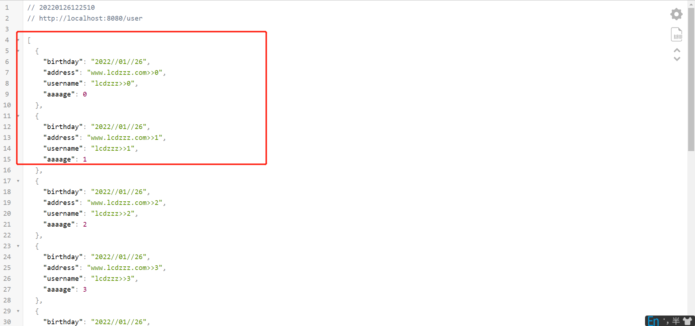
反序列化例子
默认是以key，value形式传递，如果想让它以json格式传递，则需要加@RequstBody，这样前端传递参数的时候就会以字符串的形式传递参数
@PostMapping("/user")
public void addUser(@RequestBody User user){
System.out.println(user);
}测试:


序列化或反序列化是忽略某个字段
@JsonIgnore
@JsonIgnore private String address;@JsonIgnoreProperties批量忽略字段，写在类之上
@JsonIgnoreProperties({"birthday","address"}) public class User {
@JsonFormat
// @JsonProperty(index = 96)
@JsonFormat(pattern = "yyyy-MM-dd HH:mm:ss",timezone = "Asia/Shanghai")
private Date birthday;
测试：(注意时区问题)
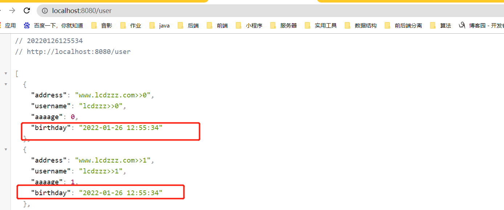
全局配置
创建一个WebMvcConfig类，定义一个ObjectMapper
@Configuration
public class WebMvcConfig {
@Bean
ObjectMapper objectMapper(){
ObjectMapper om = new ObjectMapper();
om.setDateFormat(new SimpleDateFormat("yyyy//MM//dd HH:mm:ss"));
return om;
}
}
处理静态资源
默认的静态资源优先级：
都是在
- META-INF/resources
- resources
- static
- public
- webapp

静态资源位置两种配置方法:
第一种
spring.web.resources.static-locations


spring.web.resources.static-locations+spring.web.resources.static-locations


第二种，自定义一个java类去继承
WebMvcConfigurer
文件上传
单文件上传
- 先在static下面写一个index.html,注意：以submit方式提交的字段必须有name属性，不然会忽略。
关于enctype="multipart/form-data"的解释：
- enctype就是encodetype就是编码类型的意思。
- multipart/form-data是指表单数据有多部分构成，既有文本数据，又有文件等二进制数据的意思。
- 需要注意的是：默认情况下，enctype的值是application/x-www-form-urlencoded，不能用于文件上传，只有使用了multipart/form-data，才能完整的传递文件数据。
- application/x-www-form-urlencoded不是不能上传文件，是只能上传文本格式的文件，multipart/form-data是将文件以二进制的形式上传，这样可以实现多种类型的文件上传。
<!DOCTYPE html>
<html lang="en">
<head>
<meta charset="UTF-8">
<title>Title</title>
</head>
<body>
<form action="/upload" method="post" enctype="multipart/form-data">
<input type="file" name="file">
<input type="submit" value="提交">
</form>
</body>
</html>这里为了方便起见，把上传的文件放到了项目的临时目录里。（每当项目重启，临时目录里的文件就会消失）
接着创建文件上传接口
注意：
public String upload(MultipartFile file, HttpServletRequest req) {中的“file”文件名必须和html中的<input type="file" name="file">的name属性一一对应！！！@RestController public class FileUploadController { SimpleDateFormat sdf = new SimpleDateFormat("/yyyy/MM/dd/");//按日期来分类。因为等会要扮演一个目录的角色，所以必须有斜杠！ @PostMapping("/upload") public String upload(MultipartFile file, HttpServletRequest req) { String format = sdf.format(new Date()); String realPath = req.getServletContext().getRealPath("/img") + format;//字符串拼接，形成最终的路径！ File folder = new File(realPath);//文件夹 if (!folder.exists()) { folder.mkdirs();//如果不存在，那就创建 } String oldName = file.getOriginalFilename();//原本的文件名 String newName = UUID.randomUUID().toString() + oldName.substring(oldName.lastIndexOf("."));//oldName.substring(oldName.lastIndexOf(".")截取字符串，比如一个abc.png,那就截取abc try { file.transferTo(new File(folder, newName));//第一个参数是地址，第二个参数是文件名 String url = req.getScheme() + "://" + req.getServerName() + ":" + req.getServerPort() + "/img" + format + newName; //getScheme:获取请求协议 //getServerName：比如localhost //getServerPort：请求端口 return url; } catch (IOException e) { e.printStackTrace(); } return ""; } }
多文件上传
<!DOCTYPE html>
<html lang="en">
<head>
<meta charset="UTF-8">
<title>Title</title>
</head>
<body>
<form action="/uploads" method="post" enctype="multipart/form-data">
<input type="file" name="files" multiple>
<input type="submit" value="提交">
</form>
</body>
</html>对应的接口如下
@PostMapping("/uploads")
public String uploads(MultipartFile[] files, HttpServletRequest req) {
String format = sdf.format(new Date());
String realPath = req.getServletContext().getRealPath("/img") + format;
File folder = new File(realPath);
if (!folder.exists()) {
folder.mkdirs();
}
try {
for (MultipartFile file : files) {
String oldName = file.getOriginalFilename();
String newName = UUID.randomUUID().toString() + oldName.substring(oldName.lastIndexOf("."));
file.transferTo(new File(folder, newName));
String url = req.getScheme() + "://" + req.getServerName() + ":" + req.getServerPort() + "/img" + format + newName;
System.out.println(url);
}
} catch (IOException e) {
e.printStackTrace();
}
return "success";
}上传到指定目录（相对路径）
html页面大同小异
controller接口如下：
@RestController
public class FileUploadController {
private static final Logger logger = LoggerFactory.getLogger(FileUploadController.class);
// 项目根路径下的目录 -- SpringBoot static 目录相当于是根路径下（SpringBoot 默认）
public final static String UPLOAD_PATH_PREFIX = "static/uploadFile/";
@PostMapping("/upload")
public String upload(MultipartFile uploadFile, HttpServletRequest request){
if(uploadFile.isEmpty()){
//返回选择文件提示
return "请选择上传文件";
}
SimpleDateFormat sdf = new SimpleDateFormat("yyyy/MM/dd/");
//构建文件上传所要保存的"文件夹路径"--这里是相对路径，保存到项目根路径的文件夹下
String realPath = new String("src/main/resources/" + UPLOAD_PATH_PREFIX);
System.out.println("-----------上传文件保存的路径【"+ realPath +"】-----------");
String format = sdf.format(new Date());
//存放上传文件的文件夹
File file = new File(realPath + format);
System.out.println("-----------存放上传文件的文件夹【"+ file +"】-----------");
System.out.println("-----------输出文件夹绝对路径 -- 这里的绝对路径是相当于当前项目的路径而不是“容器”路径【"+ file.getAbsolutePath() +"】-----------");
if(!file.isDirectory()){
//递归生成文件夹
file.mkdirs();
}
//获取原始的名字 original:最初的，起始的 方法是得到原来的文件名在客户机的文件系统名称
String oldName = uploadFile.getOriginalFilename();
System.out.println("-----------文件原始的名字【"+ oldName +"】-----------");
String newName = UUID.randomUUID().toString() + oldName.substring(oldName.lastIndexOf("."),oldName.length());
System.out.println("-----------文件要保存后的新名字【"+ newName +"】-----------");
try {
//构建真实的文件路径
File newFile = new File(file.getAbsolutePath() + File.separator + newName);
//转存文件到指定路径，如果文件名重复的话，将会覆盖掉之前的文件,这里是把文件上传到 “绝对路径”
uploadFile.transferTo(newFile);
String filePath = request.getScheme() + "://" + request.getServerName() + ":" + request.getServerPort() + "/uploadFile/" + format + newName;
System.out.println("-----------【"+ filePath +"】-----------");
return filePath;
} catch (Exception e) {
e.printStackTrace();
}
return "上传失败!";
}
}结果：

限制上传文件的大小
spring.servlet.multipart.max-file-size=1MB=Spring Boot+@ControllerAdvice
全局异常处理
捕获一个MaxUploadSizeExceededException异常，因为在上面，我们限制了上传文件的大小为1MB，如果上传的文件超过MB就会有异常
@RestControllerAdvice
public class MyGlobalException {
@ExceptionHandler(MaxUploadSizeExceededException.class)
public String customException(MaxUploadSizeExceededException e){
return "上传文件大小超出限制";
}
}
测试：

全局数据绑定
用@Controller去定义全局数据，只要定义好，在任何一个Controller下都可以拿到它
MyGlobalData:
@ModelAttribute("info")中，默认的key是map。这里指定了，所以是info@ControllerAdvice public class MyGlobalData { @ModelAttribute("info") public Map<String,String> mydata() { Map<String, String> info = new HashMap<>(); info.put("username", "lcdzzz"); info.put("address", "lcdzzz.github.io"); return info; } }
HelloController 第6行的asMap.get(“info”)和上面的 @ModelAttribute(“info”)相对应
@RestController public class HelloController { @GetMapping("/hello") public void hello(Model model) { Map<String, Object> asMap = model.asMap(); Map<String, String> info = (Map<String, String>) asMap.get("info"); Set<String> keySet = info.keySet(); for (String s : keySet) { System.out.println(s + "----" + info.get(s)); } } }
测试：

全局数据预处理
实体类：【tostring方法和getset方法省略】
public class Author { private String name; private Integer age; }public class Book { private String name; private Double price; }BookController
@RestController public class BookController { @PostMapping("/book") public void addBook(@ModelAttribute("b") Book book, @ModelAttribute("a") Author author) { System.out.println("book = " + book); System.out.println("author = " + author); } }MyGlobalData
@ControllerAdvice public class MyGlobalData { @InitBinder("b") public void b(WebDataBinder binder) { binder.setFieldDefaultPrefix("b."); } @InitBinder("a") public void a(WebDataBinder binder) { binder.setFieldDefaultPrefix("a."); } }
异常处理
异常页面定义
静态页面
一定要按图中的规则来定义异常页面，路径不能变，文件名和异常状态码一一对应。注意：在templates路径下的优先级更高（动态高于静态，精确高于模糊）

动态页面
<!DOCTYPE html>
<html lang="en" xmlns:th="http://www.thymeleaf.org">
<head>
<meta charset="UTF-8">
<title>Title</title>
</head>
<body>
<table border="1">
<tr>
<td>path</td>
<td th:text="${path}"></td><!--异常路径 -->
</tr>
<tr>
<td>error</td>
<td th:text="${error}"></td><!--错误信息-->
</tr>
<tr>
<td>message</td>
<td th:text="${message}"></td>
</tr>
<tr>
<td>timestamp</td>
<td th:text="${timestamp}"></td><!--异常发生的时间-->
</tr>
<tr>
<td>status</td>
<td th:text="${status}"></td><!--状态码-->
</tr>
</table>
</body>
</html>
自定义异常处理
自定义异常数据

创建一个MyErrorAtributes来继承DefaultErrorAttributes
@Component public class MyErrorAtributes extends DefaultErrorAttributes { @Override public Map<String, Object> getErrorAttributes(WebRequest webRequest, ErrorAttributeOptions options) { Map<String, Object> map = super.getErrorAttributes(webRequest, options);//这个就是服务端返回的数据 if ((Integer) map.get("status") == 404) { map.put("message", "页面不存在"); } return map; } }测试：

ps：↓↓↓999是因为定义了异常视图999.html ↓↓↓
自定义异常视图：
创建一个MyErrorViewResolver来继承DefaultErrorViewResolver【这中方法既可以定义视图也可以定义数据，但是定义数据建议使用上面的一个方法。这里
Map<String, Object> model是不可修改的，所以要重新放数据的话必须定义一个map。@Component public class MyErrorViewResolver extends DefaultErrorViewResolver { public MyErrorViewResolver(ApplicationContext applicationContext, WebProperties.Resources resources) { super(applicationContext, resources); } @Override public ModelAndView resolveErrorView(HttpServletRequest request, HttpStatus status, Map<String, Object> model) { Map<String, Object> map = new HashMap<>(); map.putAll(model); if ((Integer) model.get("status") == 500) { map.put("message", "服务器内部错误"); } ModelAndView view = new ModelAndView("lcdzzz/999",map); return view; } }创建999.html【名字自定义】
<!DOCTYPE html> <html lang="en" xmlns:th="http://www.thymeleaf.org"> <head> <meta charset="UTF-8"> <title>Title</title> </head> <body> <h1>999.html</h1> <table border="1"> <tr> <td>path</td> <td th:text="${path}"></td> </tr> <tr> <td>error</td> <td th:text="${error}"></td> </tr> <tr> <td>message</td> <td th:text="${message}"></td> </tr> <tr> <td>timestamp</td> <td th:text="${timestamp}"></td> </tr> <tr> <td>status</td> <td th:text="${status}"></td> </tr> </table> </body> </html>
测试

跨域
CORS: Cross-Origi Resource Sharing
- 域： 协议+域名/IP+duan端口 ，只要这三个其中有一个是不一样的，就是跨域了
- 资源：一个url对应一个内容。图片，html，json数据等
- 同源策略：浏览器客户端仅请求当前页面或来自同一个域的资源
提前准备好两个工程
- cors01 端口：8080
- cors02 端口：8081
第一种跨域方式
在cors01中创建一个接口
public class HelloController { @GetMapping("/hello") public String hello() { return "hello cors"; } }
在cors02建一个名为01.html的静态页面，发送ajax请求
<!DOCTYPE html> <html lang="en"> <head> <meta charset="UTF-8"> <title>Title</title> <script src="https://code.jquery.com/jquery-3.5.1.js" integrity="sha256-QWo7LDvxbWT2tbbQ97B53yJnYU3WhH/C8ycbRAkjPDc=" crossorigin="anonymous"></script> </head> <body> <input type="button" onclick="getData()" value="get"> <script> function getData() { $.get("http://localhost:8080/hello",function (msg) { alert(msg); }) } </script> </body> </html>测试：

因为同源策略，我们拿不到服务端的响应
怎么办呢，第一种方法就是在cors01的HelloController加一个@CrossOrigin。这个注解可以加在方法上也可以加在类上。哪个方法/类想支持跨域，就加那个方法/类上。关于探测请求，接下来会说
@RestController @CrossOrigin(value = "http://localhost:8081",maxAge = 1800)/*第一个参数：表示允许来自"http://localhost:8081"这个地址访问 第二个参数：过期时间（s），在有效期内，第一次探测结束后不需要再次探测*/ public class HelloController { @GetMapping("/hello") public String hello() { return "hello cors"; } }测试

探测
get请求不需要探测，但是put需要，这边以put请求为例
在cors01中的controller上，加一个put
@RestController @CrossOrigin(value = "http://localhost:8081",maxAge = 1800)/*表示允许来自"http://localhost:8081"这个地址访问*/ public class HelloController { @GetMapping("/hello") public String hello() { return "hello cors"; } @PutMapping("/hello") public String hello2() { return "hello cors put!"; } }在cors02中的01.html上
<!DOCTYPE html> <html lang="en"> <head> <meta charset="UTF-8"> <title>Title</title> <script src="https://code.jquery.com/jquery-3.5.1.js" integrity="sha256-QWo7LDvxbWT2tbbQ97B53yJnYU3WhH/C8ycbRAkjPDc=" crossorigin="anonymous"></script> </head> <body> <input type="button" onclick="getData()" value="get"> <input type="button" onclick="putData()" value="put"> <script> function getData() { $.get("http://localhost:8080/hello",function (msg) {/*第一个参数：请求的地址 第二个参数：服务端返回的信息*/ alert(msg); }) } function putData() { $.ajax({ url:'http://localhost:8080/hello', type:'put', success:function (msg) { alert(msg); } }) } </script> </body> </html>测试：

第二种跨域方式
创建一个类继承WebMvcConfigurer
@Configuration public class WebMvcConfig implements WebMvcConfigurer { @Override public void addCorsMappings(CorsRegistry registry) { registry.addMapping("/**")//要拦截的地址 .allowedHeaders("*")//是否允许的头 .allowedMethods("*")//允许的方法 .allowedOrigins("http://localhost:8081")//允许的域，也可以写“ * ” .maxAge(1800); } }
第三种跨域方式
提供一个corsFilter实例，把它注册到spring容器里面去
package org.javaboy.cors01;
import org.springframework.context.annotation.Bean;
import org.springframework.context.annotation.Configuration;
import org.springframework.web.cors.CorsConfiguration;
import org.springframework.web.cors.UrlBasedCorsConfigurationSource;
import org.springframework.web.filter.CorsFilter;
@Configuration
public class WebMvcConfig {
@Bean
CorsFilter corsFilter() {
UrlBasedCorsConfigurationSource source = new UrlBasedCorsConfigurationSource();
CorsConfiguration cfg = new CorsConfiguration();
cfg.addAllowedOrigin("http://localhost:8081");
cfg.addAllowedMethod("*");//允许的请求
source.registerCorsConfiguration("/**",cfg);
return new CorsFilter(source);
}
}
拦截器
配置拦截器：
public class MyInterceptor implements HandlerInterceptor { //该方法返回 false，请求将不再继续往下走。在请求处理之前被调用 @Override public boolean preHandle(HttpServletRequest request, HttpServletResponse response, Object handler) throws Exception { System.out.println("preHandle"); return true; } //Controller 执行之后被调用。 @Override public void postHandle(HttpServletRequest request, HttpServletResponse response, Object handler, ModelAndView modelAndView) throws Exception { System.out.println("postHandle"); } //preHandle 方法返回 true，afterCompletion 才会执行。也就是在整个请求结束之后才会执行，可以做一些资源的清理工作 @Override public void afterCompletion(HttpServletRequest request, HttpServletResponse response, Object handler, Exception ex) throws Exception { System.out.println("afterCompletion"); } }使拦截器生效
@Configuration public class WebMvcConfig implements WebMvcConfigurer {//为了让拦截器生效 @Override public void addInterceptors(InterceptorRegistry registry) {//这个方法是用来配拦截器的 registry.addInterceptor(new MyInterceptor()).addPathPatterns("/**").excludePathPatterns("/hello");//拦截哪些请求，哪些请求不拦截 } }测试类Controller
@RestController public class HelloController { @GetMapping("/hello") public String hello() { System.out.println("hello"); return "hello"; } @GetMapping("/hello2") public String hello2() { System.out.println("hello2"); return "hello2"; } }测试


系统启动任务
CommandLineRunner
MyCommandLineRunner01
@Component @Order(100) public class MyCommandLineRunner01 implements CommandLineRunner { //当系统启动时，run 方法会被触发，方法参数就是 main 方法所传入的参数 @Override public void run(String... args) throws Exception { System.out.println("args1 = " + Arrays.toString(args)); } }MyCommandLineRunner02
@Component @Order(99) public class MyCommandLineRunner02 implements CommandLineRunner { //当系统启动时，run 方法会被触发，方法参数就是 main 方法所传入的参数 @Override public void run(String... args) throws Exception { System.out.println("args2 = " + Arrays.toString(args)); } }配置：

测试：
 、
、
ApplicationRunner
MyApplicationRunner
@Component @Order(98) public class MyApplicationRunner implements ApplicationRunner { @Override public void run(ApplicationArguments args) throws Exception { //获取没有键的参数，获取到的值和 commandlinerunner 一致 List<String> nonOptionArgs = args.getNonOptionArgs(); System.out.println("nonOptionArgs1 = " + nonOptionArgs); Set<String> optionNames = args.getOptionNames(); for (String optionName : optionNames) { System.out.println(optionName + "-1->" + args.getOptionValues(optionName)); } //获取命令行中的所有参数 String[] sourceArgs = args.getSourceArgs();//不管有没有key，统统获取到数组里去 System.out.println("sourceArgs1 = " + Arrays.toString(sourceArgs)); } }MyApplicationRunner2
@Component @Order(97) public class MyApplicationRunner2 implements ApplicationRunner { @Override public void run(ApplicationArguments args) throws Exception { //获取没有键的参数，获取到的值和 commandlinerunner 一致 List<String> nonOptionArgs = args.getNonOptionArgs(); System.out.println("nonOptionArgs2 = " + nonOptionArgs); Set<String> optionNames = args.getOptionNames(); for (String optionName : optionNames) { System.out.println(optionName + "-2->" + args.getOptionValues(optionName)); } //获取命令行中的所有参数 String[] sourceArgs = args.getSourceArgs(); System.out.println("sourceArgs2 = " + Arrays.toString(sourceArgs)); } }配置

测试

SpringBoot整合web基础组件
MyFilter
@WebFilter(urlPatterns = "/*") public class MyFilter implements Filter { @Override public void doFilter(ServletRequest request, ServletResponse response, FilterChain chain) throws IOException, ServletException { System.out.println("MyFilter"); chain.doFilter(request,response); } }MyListener
@WebListener public class MyListener extends RequestContextListener { @Override public void requestInitialized(ServletRequestEvent requestEvent) { System.out.println("requestInitialized"); } @Override public void requestDestroyed(ServletRequestEvent requestEvent) { System.out.println("requestDestroyed"); } }MyServlet
@WebServlet(urlPatterns = "/hello") public class MyServlet extends HttpServlet { @Override protected void doGet(HttpServletRequest req, HttpServletResponse resp) throws ServletException, IOException { doPost(req,resp); } @Override protected void doPost(HttpServletRequest req, HttpServletResponse resp) throws ServletException, IOException { System.out.println("MyServlet"); } }扫描，让组件生效
启动类：
@ServletComponentScan("org.javaboy.webcomponent")是那三个组件所在的包@SpringBootApplication @ServletComponentScan("org.javaboy.webcomponent") public class WebcomponentApplication { public static void main(String[] args) { SpringApplication.run(WebcomponentApplication.class, args); } }测试：

SpringBoot注册过滤器的n种方式
第一种 @WebFilter
- 在启动类上扫描包
@SpringBootApplication
@ServletComponentScan("org.javaboy.filter")
public class FilterApplication {
public static void main(String[] args) {
SpringApplication.run(FilterApplication.class, args);
}
}- 这个可以设置拦截谁，没法设置优先级
@WebFilter(urlPatterns = "/*")
public class MyFilter01 implements Filter {
@Override
public void doFilter(ServletRequest request, ServletResponse response, FilterChain chain) throws IOException, ServletException {
System.out.println("MyFilter01");
chain.doFilter(request, response);
}
}第二种 @Component
把它当成普通的组件这个可以设置优先级，但是不能设置拦截谁
@Component
@Order(101)
public class MyFilter02 implements Filter {
@Override
public void doFilter(ServletRequest request, ServletResponse response, FilterChain chain) throws IOException, ServletException {
System.out.println("MyFilter02");
chain.doFilter(request, response);
}
}第三种 FilterRegistrationBean
public class MyFilter04 implements Filter {
@Override
public void doFilter(ServletRequest request, ServletResponse response, FilterChain chain) throws IOException, ServletException {
System.out.println("MyFilter04");
chain.doFilter(request, response);
}
}public class MyFilter05 implements Filter {
@Override
public void doFilter(ServletRequest request, ServletResponse response, FilterChain chain) throws IOException, ServletException {
System.out.println("MyFilter05");
chain.doFilter(request, response);
}
}@Configuration
public class FilterConfiguration {
@Bean
//用@Bean注册成一个bean
FilterRegistrationBean<MyFilter04> filter04FilterRegistrationBean04() {
FilterRegistrationBean<MyFilter04> bean = new FilterRegistrationBean<>();
bean.setOrder(90);
bean.setFilter(new MyFilter04());
bean.setUrlPatterns(Arrays.asList("/*"));
return bean;
}
@Bean
FilterRegistrationBean<MyFilter05> filter04FilterRegistrationBean05() {
FilterRegistrationBean<MyFilter05> bean = new FilterRegistrationBean<>();
bean.setOrder(89);
bean.setFilter(new MyFilter05());
bean.setUrlPatterns(Arrays.asList("/*"));
return bean;
}
}测试全部：

路径映射
这个方法有个局限性：就是这个页面没有需要渲染的数据。作为一个控制器实现简单的跳转
@Configuration
public class WebMvcConfig implements WebMvcConfigurer {
@Override //实现无业务逻辑跳转
public void addViewControllers(ViewControllerRegistry registry) {
registry.addViewController("/").setViewName("redirect:/managebooks/login");//forward和redirect区别在导航栏上
registry.setOrder(Ordered.HIGHEST_PRECEDENCE);//order的值越小，优先级越高
}
}对上面代码这呢个的redirect的解释：
使用servlet重定向有两种方式
- 一种是forward，另一种就是redirect。forward是服务器内部重定向，客户端并不知道服务器把你当前请求重定向到哪里去了，地址栏的url与你之前访问的url保持不变。
- redirect则是客户端重定向，是服务器将你当前请求返回，然后给个状态标示给你，告诉你应该去重新请求另外一个url，具体表现就是地址栏的url变成了新的url。
参数类型转换
问题描述
代码：
/** 以下省略tostring和getset方法 **/ public class User { private String username; private Date birthday; }@RestController public class UserController { @PostMapping("/user1") public void addUser(User user) { System.out.println("user = " + user); } }测试会报错，因为框架不知道如何把字符串转换成对象

解决方法
类型转换器
@Component//注册到容器中，注册成一个组件
public class MyDateConverter implements Converter<String, Date> {//意思是把String类型转换成Date类型
SimpleDateFormat sdf = new SimpleDateFormat("yyyy-MM-dd");
@Override
public Date convert(String source) {
try {
return sdf.parse(source);
} catch (ParseException e) {
e.printStackTrace();
}
return null;
}
}另一种情况
@RestController
public class UserController {
@PostMapping("/user2")
public void addUser2(@RequestBody User user) {//用了@RequestBody，代码参数以json字符串的方式传递
System.out.println("user = " + user);
}
}这个以json字符换的形式传递参数，不会报错，就算没有类型转换器
总结
POST请求，参数可以是key/value形式，也可以是JSON形式
自定义的类型转换器对key/value形式的参数有效
JSON形式的参数，不需要类型转换器。JSON字符串是通过==HttpMessageConverter==转换为User对象的
自定义首页与浏览器脚标
@Configuration
public class WebMvcConfig implements WebMvcConfigurer {
@Override
public void addViewControllers(ViewControllerRegistry registry) {
registry.addViewController("/index").setViewName("index");
}
}
favicon制作网址:https://tool.lu/favicon/
SpringBoot整合AOP
添加依赖：
<dependency> <groupId>org.springframework.boot</groupId> <artifactId>spring-boot-starter-aop</artifactId> </dependency>代码：
@Component @Aspect//表示当前这个类是一个切面 public class LogAspect { /** * execution中的第一个 * 表示方法返回值是任意的 * 这里表示service包下的所有类中的所有方法都要拦截下来 */ @Pointcut("execution(* org.javaboy.aop.service.*.*(..))")//表示这是个切点 public void pc1() { } @Before("pc1()")//pc1指定拦截规则 public void before(JoinPoint jp) { String name = jp.getSignature().getName(); System.out.println(name + " 方法开始执行了..."); } @After("pc1()") public void after(JoinPoint jp) { String name = jp.getSignature().getName(); System.out.println(name + " 方法执行结束了..."); } @AfterReturning(value = "pc1()", returning = "s") public void afterReturning(JoinPoint jp, String s) { String name = jp.getSignature().getName(); System.out.println(name + " 方法的返回值是 " + s); } @AfterThrowing(value = "pc1()", throwing = "e") public void afterThrowing(JoinPoint jp, Exception e) { String name = jp.getSignature().getName(); System.out.println(name + " 方法抛出了异常 " + e.getMessage()); } @Around("pc1()") public Object around(ProceedingJoinPoint pjp) { try { //类似于反射中的 invoke 方法 Object proceed = pjp.proceed(); return proceed; } catch (Throwable throwable) { throwable.printStackTrace(); } return null; } }service类
@Service public class UserService { public String getUserById(Integer id) { System.out.println("getUserById"); int i = 1 / 0; return "user"; } public void deleteUserById(Integer id) { System.out.println("delete id:" + id); } }测试
@SpringBootTest class AopApplicationTests { @Autowired UserService userService; @Test void contextLoads() { userService.getUserById(99); } }结果：

Spring Boot整合视图层
Thymeleaf配置
参考资料：https://mp.weixin.qq.com/s/Uvv1q3iQn2IwAB1crHWS1g
这部分的内容基本照搬了松哥的微信公众号，主要用于自己学习
基本配置
所需要的依赖
<dependencies> <dependency> <groupId>org.springframework.boot</groupId> <artifactId>spring-boot-starter-thymeleaf</artifactId> </dependency> <dependency> <groupId>org.springframework.boot</groupId> <artifactId>spring-boot-starter-web</artifactId> </dependency> <dependency> <groupId>org.springframework.boot</groupId> <artifactId>spring-boot-starter-test</artifactId> <scope>test</scope> </dependency> </dependencies>命名空间
<html lang="en" xmlns:th="http://www.thymeleaf.org"><!--默认导入的名称空间不对，应该是这个←-->
手动渲染
前端页面
<!DOCTYPE html> <html lang="en" xmlns:th="http://www.thymeleaf.org"> <head> <meta charset="UTF-8"> <title>Title</title> </head> <body> <p>Hello，欢迎 <span th:text="${username}"></span> 加入 XXX 公司！您的入职信息如下：</p> <table border="1"> <tr> <td>职位</td> <td th:text="${position}"></td> </tr> <tr> <td>薪水</td> <td th:text="${salary}"></td> </tr> </table> </body> </html>单元测试
@SpringBootTest class ThymeleafApplicationTests { @Autowired TemplateEngine templateEngine; @Test void contextLoads() { Context ctx = new Context(); ctx.setVariable("username","javaboy"); ctx.setVariable("position","Java 高工"); ctx.setVariable("salary","30000"); String mail = templateEngine.process("mail", ctx);//和hello一样，自动加上前缀和后缀，定位到文件 System.out.println(mail); } }测试结果

Thymeleaf 细节
标准表达式语法
简单表达式
后端controller的数据定义
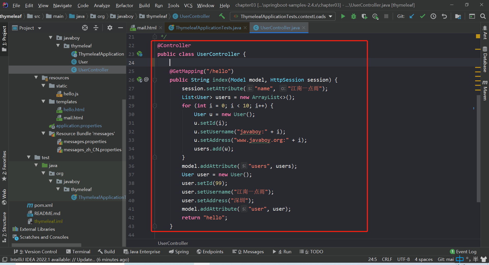
${...}直接使用
th:xx = "${}"获取对象属性。这个在前面的案例中已经演示过了，不再赘述。*{...}可以像
${...}一样使用，也可以通过th:object获取对象，然后使用th:xx = "*{}"获取对象属性，这种简写风格极为清爽，推荐大家在实际项目中使用。<table border="1" th:object="${user}"> <tr> <td>用户名</td> <td th:text="*{username}"></td> </tr> <tr> <td>地址</td> <td th:text="*{address}"></td> </tr> </table>#{...}通常的国际化属性：
#{...}用于获取国际化语言翻译值。在 resources 目录下新建两个文件：messages.properties 和 messages_zh_CN.properties，内容如下：
messages.properties：
message = javaboymessages_zh_CN.properties：
message = 周大侠然后在 thymeleaf 中引用 message，系统会根据浏览器的语言环境显示不同的值：
<div th:text="#{message}"></div>结果：

@{...}引用绝对 URL：
<script type="text/javascript" th:src="@{http://localhost:8080/hello.js}"></script>等价于：
<script type="text/javascript" src="http://localhost:8080/hello.js"></script>上下文相关的 URL：
首先在 application.properties 中配置 Spring Boot 的上下文，以便于测试：
server.servlet.context-path=/myapp引用路径：注意{}里面的斜杠
<script type="text/javascript" th:src="@{/hello.js}"></script>等价于：
<script type="text/javascript" src="/myapp/hello.js"></script>应用程序的上下文 /myapp 将被忽略。
结果测试：

字面量
这些是一些可以直接写在表达式中的字符，主要有如下几种：
- 文本字面量：’one text’, ‘Another one!’,…
- 数字字面量：0, 34, 3.0, 12.3,…
- 布尔字面量：true, false
- Null字面量：null
- 字面量标记：one, sometext, main,…
<div th:text="'这是 文本字面量(有空格)'"></div>
<div th:text="javaboy"></div>
<div th:text="99"></div>
<div th:text="true"></div>如果文本是英文，并且不包含空格、逗号等字符，可以不用加单引号。
文本运算
文本可以使用 + 进行拼接。
<div th:text="'hello '+'javaboy'"></div>
<div th:text="'hello '+${user.username}"></div>如果字符串中包含变量，也可以使用另一种简单的方式，叫做字面量置换，用 | 代替 '...' + '...'，如下：
<div th:text="|hello ${user.username}|"></div>
<div th:text="'hello '+${user.username}+' '+|Go ${user.address}|"></div>算术运算
算术运算有：+, -, *, / 和 %
<div th:with="age=(99*99/99+99-1)">
<div th:text="${age}"></div>
</div>th:with 定义了一个局部变量 age，在其所在的 div 中可以使用该局部变量。
布尔运算
- 二元运算符：and, or
- 布尔非（一元运算符）：!, not
<div th:with="age=(99*99/99+99-1)">
<div th:text="9 eq 9 or 8 ne 8"></div>
<div th:text="!(9 eq 9 or 8 ne 8)"></div>
<div th:text="not(9 eq 9 or 8 ne 8)"></div>
</div>比较和相等
表达式里的值可以使用 >, <, >= 和 <= 符号比较。== 和 != 运算符用于检查相等（或者不相等）。注意 XML规定 < 和 > 标签不能用于属性值，所以应当把它们转义为 < 和 >。(数学运算符及转义写法)
如果不想转义，也可以使用别名：gt (>)；lt (<)；ge (>=)；le (<=)；not (!)。还有 eq (==), neq/ne (!=)。
<div th:with="age=(99*99/99+99-1)">
<div th:text="${age} eq 197"></div>
<div th:text="${age} ne 197"></div>
<div th:text="${age} ge 197"></div>
<div th:text="${age} gt 197"></div>
<div th:text="${age} le 197"></div>
<div th:text="${age} lt 197"></div>
</div>条件运算符
类似于 Java 中的三目运算符。
<div th:with="age=(99*99/99+99-1)">
<div th:text="(${age} ne 197)?'yes':'no'"></div>
</div>内置对象
基本内置对象：
- #ctx：上下文对象。
- #vars: 上下文变量。
- #locale：上下文区域设置。
- #request：（仅在 Web 上下文中）HttpServletRequest 对象。
- #response：（仅在 Web 上下文中）HttpServletResponse 对象。
- #session：（仅在 Web 上下文中）HttpSession 对象。
- #servletContext：（仅在 Web 上下文中）ServletContext 对象。
在页面可以访问到上面这些内置对象，举个简单例子：
<div th:text='${#session.getAttribute("name")}'></div>实用内置对象：
- #execInfo：有关正在处理的模板的信息。
- #messages：在变量表达式中获取外部化消息的方法，与使用＃{…}语法获得的方式相同。
- #uris：转义URL / URI部分的方法
- #conversions：执行配置的转换服务（如果有）的方法。
- #dates：java.util.Date对象的方法：格式化，组件提取等
- #calendars：类似于#dates但是java.util.Calendar对象。
- #numbers：用于格式化数字对象的方法。
- #strings：String对象的方法：contains，startsWith，prepending / appending等
- #objects：一般对象的方法。
- #bools：布尔评估的方法。
- #arrays：数组方法。
- #lists：列表的方法。
- #sets：集合的方法。
- #maps：地图方法。
- #aggregates：在数组或集合上创建聚合的方法。
- #ids：处理可能重复的id属性的方法（例如，作为迭代的结果）。
这是一些内置对象以及工具方法，使用方式也都比较容易，如果使用的是 IntelliJ IDEA，都会自动提示对象中的方法，很方便。
举例：
<div th:text="${#execInfo.getProcessedTemplateName()}"></div>
<div th:text="${#arrays.length(#request.getAttribute('names'))}"></div>设置属性值
这个是给 HTML 元素设置属性值。可以一次设置多个，多个之间用 , 分隔开。
例如：
<img th:attr="src=@{/1.png},title=${user.username},alt=${user.username}">会被渲染成：
<img src="/myapp/1.png" title="javaboy" alt="javaboy">当然这种设置方法不太美观，可读性也不好。Thymeleaf 还支持在每一个原生的 HTML 属性前加上 th: 前缀的方式来使用动态值，像下面这样：【可以在所有原生属性前面加一个th:，让他变成一个thymeleaf属性】
<img th:src="@{/1.png}" th:alt="${user.username}" th:title="${user.username}">这种写法看起来更清晰一些，渲染效果和前面一致。
上面案例中的 alt 和 title 则是两个特殊的属性，可以一次性设置，像下面这样：
<img th:src="@{/1.png}" th:alt-title="${user.username}">这个等价于前文的设置。
遍历
数组/集合/Map/Enumeration/Iterator 等的遍历也算是一个非常常见的需求，Thymeleaf 中通过 th:each 来实现遍历，像下面这样：
<table border="1">
<tr th:each="u : ${users}">
<td th:text="${u.username}"></td>
<td th:text="${u.address}"></td>
</tr>
</table>users 是要遍历的集合/数组，u 则是集合中的单个元素。
遍历的时候，我们可能需要获取遍历的状态，Thymeleaf 也对此提供了支持：
- index：当前的遍历索引，从0开始。
- count：当前的遍历索引，从1开始。
- size：被遍历变量里的元素数量。
- current：每次遍历的遍历变量。
- even/odd：当前的遍历是偶数次还是奇数次。
- first：当前是否为首次遍历。
- last：当前是否为最后一次遍历。
u 后面的 state 表示遍历状态，通过遍历状态可以引用上面的属性。
<table border="1">
<tr th:each="u,state : ${users}">
<td th:text="${u.username}"></td>
<td th:text="${u.address}"></td>
<td th:text="${state.index}"></td>
<td th:text="${state.count}"></td>
<td th:text="${state.size}"></td>
<td th:text="${state.current}"></td>
<td th:text="${state.even}"></td>
<td th:text="${state.odd}"></td>
<td th:text="${state.first}"></td>
<td th:text="${state.last}"></td>
</tr>
</table>分支语句
只显示奇数次的遍历，可以使用 th:if，如下：
<table border="1">
<tr th:each="u,state : ${users}" th:if="${state.odd}">
<td th:text="${u.username}"></td>
<td th:text="${u.address}"></td>
<td th:text="${state.index}"></td>
<td th:text="${state.count}"></td>
<td th:text="${state.size}"></td>
<td th:text="${state.current}"></td>
<td th:text="${state.even}"></td>
<td th:text="${state.odd}"></td>
<td th:text="${state.first}"></td>
<td th:text="${state.last}"></td>
</tr>
</table>th:if 不仅仅只接受布尔值，也接受其他类型的值，例如如下值都会判定为 true：
- 如果值是布尔值，并且为 true。
- 如果值是数字，并且不为 0。
- 如果值是字符，并且不为 0。
- 如果值是字符串，并且不为 “false”， “off” 或者 “no”。
- 如果值不是布尔值，数字，字符或者字符串。
但是如果值为 null，th:if 会求值为 false。
th:unless 的判定条件则与 th:if 完全相反。
<table border="1">
<tr th:each="u,state : ${users}" th:unless="${state.odd}">
<td th:text="${u.username}"></td>
<td th:text="${u.address}"></td>
<td th:text="${state.index}"></td>
<td th:text="${state.count}"></td>
<td th:text="${state.size}"></td>
<td th:text="${state.current}"></td>
<td th:text="${state.even}"></td>
<td th:text="${state.odd}"></td>
<td th:text="${state.first}"></td>
<td th:text="${state.last}"></td>
</tr>
</table>这个显示效果则与上面的完全相反。
当可能性比较多的时候，也可以使用 switch：
<table border="1">
<tr th:each="u,state : ${users}">
<td th:text="${u.username}"></td>
<td th:text="${u.address}"></td>
<td th:text="${state.index}"></td>
<td th:text="${state.count}"></td>
<td th:text="${state.size}"></td>
<td th:text="${state.current}"></td>
<td th:text="${state.even}"></td>
<td th:text="${state.odd}"></td>
<td th:text="${state.first}"></td>
<td th:text="${state.last}"></td>
<td th:switch="${state.odd}">
<span th:case="true">odd</span>
<span th:case="*">even</span>
</td>
</tr>
</table>th:case="*" 则表示默认选项。
本地变量
这个我们前面已经涉及到了，使用 th:with 可以定义一个本地变量。
内联
我们可以使用属性将数据放入页面模版中，但是很多时候，内联的方式看起来更加直观一些，像下面这样：
<div>hello [[${user.username}]]</div>用内联的方式去做拼接也显得更加自然。
[[...]] 对应于 th:text （结果会是转义的 HTML），[(...)]对应于 th:utext，它不会执行任何的 HTML 转义。
像下面这样：【注意：通过 th:with 定义的变量，是在标签里生效的，所以第一种写法是错误的，没法显示不执行转义的html表情】
<div th:with="str='hello <strong>javaboy</strong>'"></div>
<div>[[${str}]]</div>
<div>[(${str})]</div>↑↑↑以上写法错误↑↑↑
↓↓↓以下写法正确↓↓↓
<div th:with="str='hello <strong>javaboy</strong>'">
<div>[[${str}]]</div>
<div>[(${str})]</div>
</div>最终的显示效果如下：

不过内联方式有一个问题。我们使用 Thymeleaf 的一大优势在于不用动态渲染就可以直接在浏览器中看到显示效果，当我们使用属性配置的时候确实是这样，但是如果我们使用内联的方式，各种表达式就会直接展示在静态网页中。
也可以在 js 或者 css 中使用内联，以 js 为例，使用方式如下：
<script th:inline="javascript">
var username=[[${user.username}]]
console.log(username)
</script>js 中需要通过 th:inline="javascript" 开启内联。
通过这种“手段”，就可以在js代码里面直获取到服务端传过来的数据（比如在js里面获取request或者httpsession里边的东西）
//本人在“照搬文章内容”基础上加了一些自学过程中自己的理解，这模块的内容仅用于学习，再次感谢松哥写的文章。
Freemarker简介
这是一个相当老牌的开源的免费的模版引擎，基于Apache许可证2.0版本发布。
通过 Freemarker 模版，我们可以将数据渲染成 HTML 网页、电子邮件、配置文件以及源代码等。Freemarker 不是面向最终用户的，而是一个 Java 类库，我们可以将之作为一个普通的组件嵌入到我们的产品中。
来看一张来自 Freemarker 官网的图片：

可以看到，Freemarker 可以将模版和数据渲染成 HTML 。
Freemarker 模版后缀为 .ftlh(FreeMarker Template Language)。FTL 是一种简单的、专用的语言，它不是像 Java 那样成熟的编程语言。在模板中，你可以专注于如何展现数据， 而在模板之外可以专注于要展示什么数据。
整合 Spring Boot
<dependency>
<groupId>org.springframework.boot</groupId>
<artifactId>spring-boot-starter-freemarker</artifactId>
</dependency>
<dependency>
<groupId>org.springframework.boot</groupId>
<artifactId>spring-boot-starter-web</artifactId>
</dependency>创建类
User类
public class User {
private Long id;
private String username;
private String address;
//省略 getter/setter
}UserController
@Controller
public class UserController {
@GetMapping("/hello")
public String index(Model model) {
List<User> users = new ArrayList<>();
for (int i = 0; i < 10; i++) {
User user = new User();
user.setId((long) i);
user.setUsername("javaboy>>>>" + i);
user.setAddress("www.javaboy.org>>>>" + i);
users.add(user);
}
model.addAttribute("users", users);
return "index";
}
}在 freemarker 中渲染数据：
<!DOCTYPE html>
<html lang="en">
<head>
<meta charset="UTF-8">
<title>Title</title>
</head>
<body>
<table border="1">
<tr>
<td>用户编号</td>
<td>用户名称</td>
<td>用户地址</td>
</tr>
<#list users as user>
<tr>
<td>${user.id}</td>
<td>${user.username}</td>
<td>${user.address}</td>
</tr>
</#list>
</table>
</body>
</html>结果：
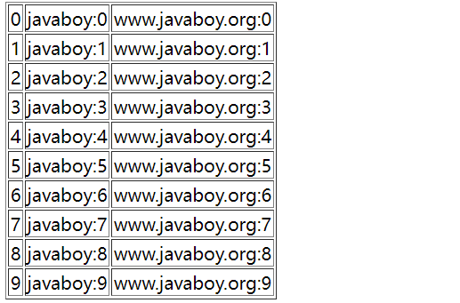
其他配置
如果我们要修改模版文件位置等，可以在 application.properties 中进行配置：
spring.freemarker.allow-request-override=false
spring.freemarker.allow-session-override=false
spring.freemarker.cache=false
spring.freemarker.charset=UTF-8
spring.freemarker.check-template-location=true
spring.freemarker.content-type=text/html
spring.freemarker.expose-request-attributes=false
spring.freemarker.expose-session-attributes=false
spring.freemarker.suffix=.ftl
spring.freemarker.template-loader-path=classpath:/templates/配置文件按照顺序依次解释如下：
- HttpServletRequest的属性是否可以覆盖controller中model的同名项
- HttpSession的属性是否可以覆盖controller中model的同名项
- 是否开启缓存
- 模板文件编码
- 是否检查模板位置
- Content-Type的值
- 是否将HttpServletRequest中的属性添加到Model中
- 是否将HttpSession中的属性添加到Model中
- 模板文件后缀
- 模板文件位置
Freemarker使用细节
插值与表达式
直接输出值
字符串
可以直接输出一个字符串：
<div>${"hello，我是直接输出的字符串"}</div>
<div>${"我的文件保存在C:\\盘"}</div>\ 需要进行转义。
如果感觉转义太麻烦，可以在目标字符串的引号前增加 r 标记,在 r 标记后的文本内容将会直接输出，像下面这样：
<div>${r"我的文件保存在C:\盘"}</div>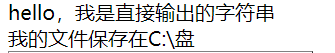
数字
在 FreeMarker 中使用数值需要注意以下几点:
- 数值不能省略小数点前面的0，所以”.5”是错误的写法。
- 数值 8 , +8 , 8.00 都是相同的。
数字还有一些其他的玩法：
- 将数字以钱的形式展示
<#assign num=99>
<div>${num?string.currency}</div><#assign num=99> 表示定义了一个变量 num，值为 99。最终的展示形式是在数字前面出现了一个人民币符号：
- 将数字以百分数的形式展示
<div>${num?string.percent}</div>布尔
布尔类型可以直接定义，不需要引号，像下面这样：
<#assign flag=true>
<div>${flag?string("a","b")}</div>首先使用 <#assign flag=true> 定义了一个 Boolean 类型的变量，然后在 div 中展示，如果 flag 为 true，则输出 a，否则输出 b。
集合
集合也可以现场定义现场输出，例如如下方式定义一个 List 集合并显示出来：
<#list ["星期一", "星期二", "星期三", "星期四", "星期五", "星期六", "星期天"] as x>
${x}<br/>
</#list>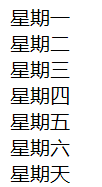
集合中的元素也可以是一个表达式：
<#list [2+2,"javaboy"] as x>
${x} <br/>
</#list>集合中的第一个元素就是 2+2 的结果，即 4。
也可以用 1..5 表示 1 到 5，5..1 表示 5 到 1，例如：
<#list 5..1 as x>
${x} <br/>
</#list>
<#list 1..5 as x>
${x} <br/>
</#list>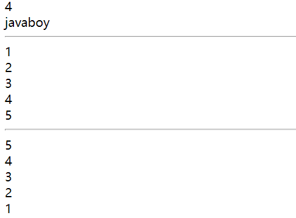
也可以定义 Map 集合，Map 集合用一个 {} 来描述：
<hr>
<#assign userinfo={"name":"javaboy","address":"www.javaboy.org"}>
<#list userinfo?keys as key><#--意思是拿到userinfo这个map里面所有的key命名为key，并展示出来-->
<div>${key}-${userinfo[key]}</div>
</#list>
<hr>
<#list userinfo?values as value>
<div>${value}</div>
</#list>
<hr>
<div>${userinfo.name}</div>
<div>${userinfo['address']}</div>最上面两个循环分别表示遍历 Map 中的 key+values 和 values。
下面的 .name和['name']两种写法是等价的
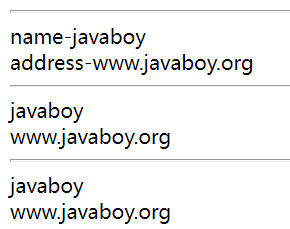
输出变量
创建一个 HelloController，然后添加如下方法：
@Controller
public class UserController {
@GetMapping("/hello")
public String hello(Model model) {
List<User> users = new ArrayList<>();
for (int i = 0; i < 10; i++) {
User u = new User();
u.setId((long) i);
u.setUsername("javaboy:" + i);
u.setAddress("www.javaboy.org:" + i);
users.add(u);
}
model.addAttribute("users", users);
Map<String, Object> info = new HashMap<>();
info.put("name", "江南一点雨");
info.put("age", 99);
model.addAttribute("info", info);
model.addAttribute("name", "javaboy");
model.addAttribute("birthday", new Date());
return "hello";
}
}普通变量
普通变量的展示很容易，如下：
<div>${name}</div>集合
集合的展示就有很多不同的玩法了。
直接遍历：
<div>
<table border="1">
<#list users as u>
<tr>
<td>${u.id}</td>
<td>${u.username}</td>
<td>${u.address}</td>
</tr>
</#list>
</table>
</div>输出集合中第三个元素：
<div>${users[1].address}</div>输出集合中第 4-6 个元素，即子集合：
<div>
<table border="1">
<#list users[3..5] as u>
<tr>
<td>${u.id}</td>
<td>${u.username}</td>
<td>${u.address}</td>
</tr>
</#list>
</table>
</div>遍历时，可以通过 变量_index 获取遍历的下标：
<div>
<table border="1">
<#list users as u>
<tr>
<td>${u.id}</td>
<td>${u.username}</td>
<td>${u.address}</td>
<td>${u_index}</td>
<td>${u_has_next?string("yes","no")}</td>
</tr>
</#list>
</table>
</div>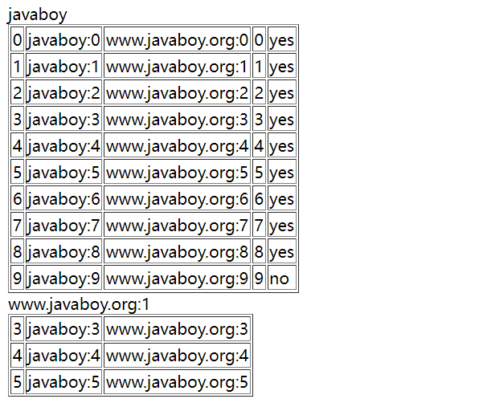
Map
直接获取 Map 中的值有不同的写法，如下：
<div>${info.name}</div>
<div>${info['age']}</div>获取 Map 中的所有 key，并根据 key 获取 value：【注意：循环写法时 <div>${key}-${info.key}</div>这种写法是错的】
<div>
<#list info?keys as key>
<div>${key}-${info[key]}</div>
</#list>
</div>获取 Map 中的所有 value：
<div>
<#list info?values as value>
<div>${value}</div>
</#list>
</div>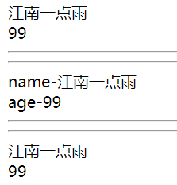
字符串操作
字符串的拼接有两种方式：
<div>${"hello ${name}"}</div>
<div>${"hello "+ name}</div>也可以从字符串中截取子串：
<div>${name[0]}${name[1]}</div>
<div>${name[1..3]}</div>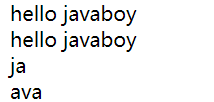
集合操作
集合或者 Map 都可以相加。
集合相加：
<div>
<#list [1,2,3]+[4,5,6] as x>
<div>${x}</div>
</#list>
</div>Map 相加：
<#list (info+{"address":"www.javaboy.org"})?keys as key>
<div>${key}</div>
</#list>3.1.5 算术运算符
+、—、*、/、% 运算都是支持的。
<div>
<#assign age=99>
<div>${age*99/99+99-1}</div>
</div>3.1.6 比较运算
比较运算和 Thymeleaf 比较类似:
- = 或者 == 判断两个值是否相等。
- != 判断两个值是否不等。
>或者gt判断左边值是否大于右边值。>=或者gte判断左边值是否大于等于右边值。<或者lt判断左边值是否小于右边值。<=或者lte判断左边值是否小于等于右边值。
可以看到，带 < 或者 > 的符号，也都有别名，建议使用别名。
<div>
<#assign age=99>
<#if age=99>age=99</#if>
<#if age gt 99>age gt 99</#if>
<hr>
<#if (age > 99) || 1==1>(age > 99) || 1==1</#if>
<hr>
<#if age gte 99>age gte 99</#if>
<#if age lt 99>age lt 99</#if>
<#if age lte 99>age lte 99</#if>
<#if age!=99>age!=99</#if>
<#if age==99>age==99</#if>
</div>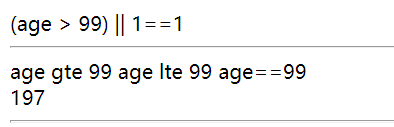
逻辑运算
逻辑运算符有三个:
- 逻辑与
&& - 逻辑或
|| - 逻辑非
!
逻辑运算符只能作用于布尔值,否则将产生错误。
<div>
<#assign age=99>
<#if age=99 && 1==1>age=99 && 1==1</#if>
<#if age=99 || 1==0>age=99 || 1==0</#if>
<#if !(age gt 99)>!(age gt 99)</#if>
</div>空值处理
为了处理缺失变量,Freemarker 提供了两个运算符:
!：指定缺失变量的默认值??：判断某个变量是否存在
如果某个变量不存在，则设置其为 javaboy，如下：
<div>${aaa!"javaboy"}</div>如果某个变量不存在，则设置其为空字符串，如下：
<div>${aaa!}</div>即，! 后面的东西如果省略了，默认就是空字符串。
判断某个变量是否存在：
<div>${aaa!"javaboy"}</div>
<div>${aaa!}</div>
<div><#if aaa??>aaa</#if></div>内建函数
内建函数涉及到的东西比较多，可以参考官方文档:http://freemarker.foofun.cn/ref_builtins.html
这里仅说一些比较常用的内建函数。
cap_first
使字符串第一个字母大写：
<div>${"hello"?cap_first}</div>lower_case
将字符串转换成小写：
<div>${"HELLO"?lower_case}</div>upper_case
将字符串转换成大写：
<div>${"hello"?upper_case}</div>trim
去掉字符串前后的空白字符：
<div>${" hello"?trim}</div>size
获取序列中元素的个数：
<div>${users?size}</div>int
取得数字的整数部分,结果带符号：
<div>${3.14?int}</div>freemarker日期格式化
<div>${birthday?string("yyyy-MM-dd")}</div>常用指令
if/else
分支控制指令，作用类似于 Java 语言中的 if：
<div>
<#assign age=23>
<#if (age>60)>老年人
<#elseif (age>40)>中年人
<#elseif (age>20)>青年人
<#else> 少年人
</#if>
</div>比较符号中用了 ()，因此不用转义。
switch
分支指令，类似于 Java 中的 switch：
<div>
<#assign age=99>
<#switch age>
<#case 23>23<#break>
<#case 24>24<#break>
<#default>9999
</#switch>
</div><#break> 是提前退出，也可以用在 <#list> 中。
include
include 可以包含一个外部页面进来。
<#include "./javaboy.ftlh">macro
macro 用来定义一个宏。
我们可以自定义一个名为 book 的宏，并引用它：
<#macro book>
三国演义
</#macro>
<@book/>最终页面中会输出宏中所定义的内容。
在定义宏的时候，也可以传入参数，那么引用时，也需要传入参数：
<#macro book bs>
<table border="1">
<#list bs as b>
<tr>
<td>${b}</td>
</tr>
</#list>
</table>
</#macro>
<@book ["三国演义","水浒传"]/>bs 就是需要传入的参数。可以通过传入多个参数，多个参数跟在 bs 后面即可，中间用空格隔开。
还可以使用 <#nested> 引入用户自定义指令的标签体，像下面这样：
<#macro book bs>
<table border="1">
<#list bs as b>
<tr>
<td>${b}</td>
</tr>
</#list>
</table>
<#nested>
</#macro>
<@book ["三国演义","水浒传"]>
<h1>hello javaboy!</h1>
</@book>在宏定义的时候，<#nested> 相当于是一个占位符，在调用的时候，<@book> 标签中的内容会出现在 <#nested> 位置。
前面的案例中，宏都是定义在当前页面中，宏也可以定义在一个专门的页面中。新建 myjavaboy.ftlh 页面，内容如下：
<#macro book bs>
<table border="1">
<#list bs as b>
<tr>
<td>${b}</td>
</tr>
</#list>
</table>
<#nested>
</#macro>此时，需要先通过 <#import> 标签导入宏，然后才能调用，如下：
<#import "./myjavaboy.ftlh" as com>
<@com.book bs=["三国演义","水浒传"]>
<h1>hello javaboy!</h1>
</@com.book>3.2.5 noparse
如果想在页面展示一些 Freemarker 语法而不被渲染，则可以使用 noparse 标签，如下：
<#noparse>
<#import "./myjavaboy.ftlh" as com>
<@com.book bs=["三国演义","水浒传"]>
<h1>hello javaboy!</h1>
</@com.book>
</#noparse>显示效果如下：
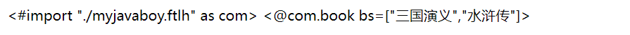
Spring Boot 整合数据持久层
Spring Boot 整合 MyBatis【注解版】
实体类准备
public class User { private Long id; private String username; private String address; public Long getId() { return id; } public void setId(Long id) { this.id = id; } public String getUsername() { return username; } public void setUsername(String username) { this.username = username; } @Override public String toString() { return "User{" + "id=" + id + ", username='" + username + '\'' + ", address='" + address + '\'' + '}'; } public String getAddress() { return address; } public void setAddress(String address) { this.address = address; } }注册mapper
@SpringBootApplication @MapperScan(basePackages = "org.javaboy.mybatis.mapper")//指定扫描文件 public class MybatisApplication { public static void main(String[] args) { SpringApplication.run(MybatisApplication.class, args); } }sql语句
public interface UserMapper { @Select("select * from user where id=#{id}") User getUserById(Long id); @Results({ @Result(property = "address",column = "address1") }) @Select("select * from user") List<User> getAllUsers(); @Insert("insert into user (username,address1) values (#{username},#{address})") //主键回填 @SelectKey(statement = "select last_insert_id()",keyProperty = "id",before = false,resultType = Long.class) Integer addUser(User user); @Delete("delete from user where id=#{id}") Integer deleteById(Long id); @Update("update user set username=#{username} where id=#{id}") Integer updateById(String username, Long id); }测试
@SpringBootTest class MybatisApplicationTests { @Autowired UserMapper userMapper; @Test void contextLoads() { User user = userMapper.getUserById(3L); System.out.println(user); } @Test void tes1() { List<User> users = userMapper.getAllUsers(); System.out.println(users); } @Test void test2() { User user = new User(); user.setUsername("zhangsan"); user.setAddress("shenzhen"); userMapper.addUser(user); System.out.println("user.getId() = " + user.getId()); } @Test void test3() { userMapper.deleteById(12L); userMapper.updateById("123", 11L); } }
Spring Boot 整合 MyBatis【XML版】
如上
如上
resource目录下的UserMapper2.xml
<!DOCTYPE mapper PUBLIC "-//mybatis.org//DTD Mapper 3.0//EN" "http://mybatis.org/dtd/mybatis-3-mapper.dtd"> <mapper namespace="org.javaboy.mybatis.mapper.UserMapper2"> <resultMap id="UserMap" type="org.javaboy.mybatis.model.User"> <id property="id" column="id"/> <result property="username" column="username"/> <result property="address" column="address1"/> </resultMap> <select id="getUserById" resultMap="UserMap"> select * from user where id=#{id}; </select> <select id="getAllUsers" resultMap="UserMap"> select * from user ; </select> <insert id="addUser" parameterType="org.javaboy.mybatis.model.User" useGeneratedKeys="true" keyProperty="id">/*parameterType代表参数类型*/ insert into user (username,address1) values (#{username},#{address}); </insert> <delete id="deleteById"> delete from user where id=#{id} </delete> <update id="updateById"> update user set username = #{username} where id=#{id}; </update> </mapper>测试类
@Autowired UserMapper2 userMapper2; @Test void test4() { User user = userMapper2.getUserById(9L); System.out.println("user = " + user); List<User> allUsers = userMapper2.getAllUsers(); System.out.println("allUsers = " + allUsers); User u = new User(); u.setUsername("lisi"); u.setAddress("guangzhou"); userMapper2.addUser(u); System.out.println(u.getId()); userMapper2.deleteById(9L); userMapper2.updateById("zhangsan", 4L); }
定义资源文件
- 告诉maven，我的配置文件不仅仅在resource目录下，还在上面的java目录下
<resources>
<resource>
<directory>src/main/java</directory>
<includes>
<include>**/*.xml</include>
</includes>
</resource>
<resource>
<directory>src/main/resources</directory>
</resource>
</resources>文件目录如图

也可以直接指定mapper在哪里，如下图
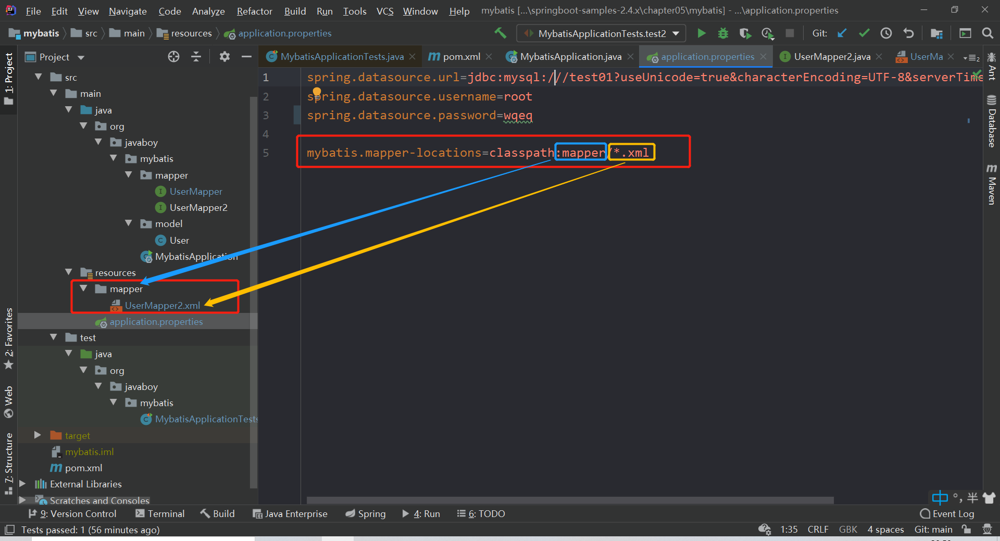
Spring Boot 整合 MyBatis 多数据源
在配置数据库的properties里配置数据库的连接信息
spring.datasource.one.jdbcUrl=jdbc:mysql:///test01?useUnicode=true&characterEncoding=UTF-8&serverTimezone=Asia/Shanghai spring.datasource.one.username=root spring.datasource.one.password=wqeq spring.datasource.two.jdbcUrl=jdbc:mysql:///test02?useUnicode=true&characterEncoding=UTF-8&serverTimezone=Asia/Shanghai spring.datasource.two.username=root spring.datasource.two.password=wqeq在config包中的DataSourceConfig创建DataSource的实例【DataSourceConfig】
@Configuration public class DataSourceConfig { @Bean @ConfigurationProperties(prefix = "spring.datasource.one") DataSource dsOne() { return new HikariDataSource(); } @Bean @ConfigurationProperties(prefix = "spring.datasource.two") DataSource dsTwo() { return new HikariDataSource(); } }配置mybatis实例【MyBatisConfigOne 、MyBatisConfigTwo】
@Configuration @MapperScan(basePackages = "org.javaboy.mybatismulti.mapper1",sqlSessionFactoryRef = "sqlSessionFactory1",sqlSessionTemplateRef = "sqlSessionTemplate1") public class MyBatisConfigOne { @Autowired @Qualifier("dsOne") DataSource ds; @Bean SqlSessionFactory sqlSessionFactory1() { SqlSessionFactory sqlSessionFactory = null; try { SqlSessionFactoryBean bean = new SqlSessionFactoryBean(); bean.setDataSource(ds); sqlSessionFactory = bean.getObject(); } catch (Exception e) { e.printStackTrace(); } return sqlSessionFactory; } @Bean SqlSessionTemplate sqlSessionTemplate1() { return new SqlSessionTemplate(sqlSessionFactory1()); } }mapper包下，【UserMapper1和UserMapper1.xml】【UserMapper2和UserMapper2.xml】
综上↑，项目结构如图所示

测试代码
@SpringBootTest class MybatismultiApplicationTests { @Autowired UserMapper1 userMapper1; @Autowired UserMapper2 userMapper2; @Test void contextLoads() { System.out.println("userMapper1.getAllUsers() = " + userMapper1.getAllUsers()); System.out.println("userMapper2.getAllUsers() = " + userMapper2.getAllUsers()); } }
测试结果

Spring Boot 整合 Spring Data Jpa
入门操作
依赖
<dependency> <groupId>org.springframework.boot</groupId> <artifactId>spring-boot-starter-data-jpa</artifactId> </dependency> <dependency> <groupId>org.springframework.boot</groupId> <artifactId>spring-boot-starter-web</artifactId> </dependency> <dependency> <groupId>mysql</groupId> <artifactId>mysql-connector-java</artifactId> <scope>runtime</scope> </dependency> <dependency> <groupId>org.springframework.boot</groupId> <artifactId>spring-boot-starter-test</artifactId> <scope>test</scope> </dependency>数据库基本配置
spring.datasource.username=root spring.datasource.password=wqeq spring.datasource.url=jdbc:mysql:///test01?useUnicode=true&characterEncoding=UTF-8 #jpa的平台 spring.jpa.database=mysql #在控制台打印sql spring.jpa.show-sql=true #指定数据库平台 spring.jpa.database-platform=mysql #如果对象变了，对应的表也要重新更新 spring.jpa.hibernate.ddl-auto=update #指定数据库的方言为mysql57，5.7的版本就会默认选择InnoDB【是MySQL的数据库引擎之一】 spring.jpa.properties.hibernate.dialect=org.hibernate.dialect.MySQL57Dialect定义实体类
@Entity(name = "t_book")//以后数据库上自动创建一个和java类对应的表||如果什么都不标记，默认使用类名作为表名 public class Book { @Id//代表被注释的属性是主键 @GeneratedValue(strategy = GenerationType.IDENTITY)//自动生成【自动增长型】 private Long id;//默认属性名就是数据库里字段的名称 @Column(name = "b_name")//重新指定数据库字段的名字 private String name; private String author; @Override public String toString() { return "Book{" + "id=" + id + ", name='" + name + '\'' + ", author='" + author + '\'' + '}'; } public Long getId() { return id; } public void setId(Long id) { this.id = id; } public String getName() { return name; } public void setName(String name) { this.name = name; } public String getAuthor() { return author; } public void setAuthor(String author) { this.author = author; } }运行启动类，查看数据库结果

操作表,在单元测试中测试
添加/删除
@Autowired BookDao bookDao; @Test void contextLoads() { Book book = new Book(); book.setName("三国演义"); book.setAuthor("罗贯中"); bookDao.save(book);//保存一条记录 } @Test void test1() { List<Book> list = bookDao.findAll(); System.out.println("list = " + list); Optional<Book> byId = bookDao.findById(2L);//查找id为2的 System.out.println("byId = " + byId); bookDao.deleteById(1L);//删除id为1的 }分页操作
@Test void test2() { //页码从 0 开始记，1 表示第二页 PageRequest pageRequest = PageRequest.of(0, 3/*第一页，每页有三条记录*/, Sort.by(Sort.Order.asc("id"))); Page<Book> page = bookDao.findAll(pageRequest); System.out.println("总记录数： " + page.getTotalElements()); System.out.println("总页数 " + page.getTotalPages()); System.out.println("查到的数据 " + page.getContent()); System.out.println("每页的记录数 " + page.getSize());//每页我打算查询到多少条记录 System.out.println("是否还有下一页 " + page.hasNext()); System.out.println("是否还有上一页 " + page.hasPrevious()); System.out.println("是否最后一页 " + page.isLast()); System.out.println("是否第一页 " + page.isFirst()); System.out.println("当前页码 " + page.getNumber()); System.out.println("当前页的记录数 " + page.getNumberOfElements());//实际查询到多少条，比如最后一页查询到的就不是三条了 }分页测试

按方法命名规范
按方法的命名规范来
public interface BookDao extends JpaRepository<Book,Long>/*JpaRepository这个类有两个泛型：1.到时候BookDao这个类要处理的实体类是谁 2.实体类定义的主键类型是什么 这堆东西会自动注入到spring容器中去 */ { List<Book> getBookByAuthorIs(String author);//方法名可以以find get read三个单词开始 //美其名曰：现在不用管数据库的东西，咱操作的就是对象 }在单元测试中测试
@Test void test3() { List<Book> list = bookDao.getBookByAuthorIs("鲁迅"); System.out.println("list = " + list); }结果

这里借用下松哥的博客 http://springboot.javaboy.org/2019/0407/springboot-jpa
自定义查询
当方法命名规范里的操作无法满足你的需求的时候，就需要自定义查询
在dao包下的BookDao类
//nativeQuery代表使用原生的sql @Query(nativeQuery = true,value = "select * from t_book where id=(select max(id) from t_book)") Book maxIdBook();单元测试
@Test void test4() { System.out.println(bookDao.maxIdBook()); }测试结果

自定义更新
涉及到数据库的修改，要球必须要有事务
dao包下的BookDao
@Query("update t_book set b_name=:name where id=:id") @Modifying//默认的sql是不支持更新操作的，如果想让它支持更新操作，就要加这个注解 void updateBookById(String name, Long id);service包下的BookService
@Service public class BookService { @Autowired BookDao bookDao; @Transactional//给它一个事务 public void updateBookById(String name, Long id){ bookDao.updateBookById(name, id); } }单元测试
@Autowired BookService bookService; @Test void test5() { bookService.updateBookById("123", 7L); }测试结果

Spring Data Jpa 多数据源
这方面比较简单是写起来又复杂，直接参考松哥的博客（关键是自己懒）
http://springboot.javaboy.org/2019/0407/springboot-jpa-multi
Spring Boot 整合 NoSQL
Spring Boot 整合 Redis
配置redis基本信息
# redis 密码，没有的话可以不弄 #spring.redis.password=123 spring.redis.host=127.0.0.1 spring.redis.port=6379依赖
<dependency> <groupId>org.springframework.boot</groupId> <artifactId>spring-boot-starter-data-redis</artifactId> </dependency>实体类
public class User implements Serializable {//Serializable接口可以实现自动序列化 private String username; private String address; @Override public String toString() { return "User{" + "username='" + username + '\'' + ", address='" + address + '\'' + '}'; } public String getUsername() { return username; } public void setUsername(String username) { this.username = username; } public String getAddress() { return address; } public void setAddress(String address) { this.address = address; } }单元测试代码
@SpringBootTest class RedisApplicationTests { @Autowired RedisTemplate redisTemplate;//键值对可以是对象，并会自动序列化 @Autowired StringRedisTemplate stringRedisTemplate;//键值对只能是string @Test void contextLoads() { User user = new User(); user.setUsername("javaboy"); user.setAddress("www.javaboy.org"); ValueOperations ops = redisTemplate.opsForValue(); ops.set("u", user); User u = (User) ops.get("u");//拿到对象以后又自动帮我反序列化 System.out.println("u = " + u); } @Test void test1() throws JsonProcessingException { ValueOperations<String, String> ops = stringRedisTemplate.opsForValue(); User user = new User(); user.setUsername("javaboy"); user.setAddress("www.javaboy.org"); ObjectMapper om = new ObjectMapper(); String s = om.writeValueAsString(user);//将对象序列化成字符串，“s” ops.set("u1", s); String u1 = ops.get("u1"); User user1 = om.readValue(u1, User.class);//反序列化成对象 System.out.println("user1 = " + user1); } }
RedisTemplate测试结果，key的值也会进行序列化操作

StringRedisTemplate测试结果，不会进行任何序列化操作

Spring Boot 整合 Redis的具体应用—session共享
所需的依赖【redis、spring session】
<dependencies> <dependency> <groupId>org.springframework.boot</groupId> <artifactId>spring-boot-starter-data-redis</artifactId> </dependency> <dependency> <groupId>org.springframework.boot</groupId> <artifactId>spring-boot-starter-web</artifactId> </dependency> <dependency> <groupId>org.springframework.session</groupId> <artifactId>spring-session-data-redis</artifactId> </dependency> <dependency> <groupId>org.springframework.boot</groupId> <artifactId>spring-boot-starter-test</artifactId> <scope>test</scope> </dependency> </dependencies>redis基本信息的配置和之前一样
代码，往session里面存数据以及读数据
@RestController public class HelloController { @Value("${server.port}")//注入项目的端口号 Integer port; @GetMapping("/set") public String set(HttpSession session) { session.setAttribute("javaboy", "www.javaboy.org"); return String.valueOf(port); } @GetMapping("/get") public String get(HttpSession session) { String javaboy = (String) session.getAttribute("javaboy"); return javaboy + ":" + port; } }如果引入了redis和spring session的依赖，那么关于spring的操作会被自动的拦截下来，本来session会存在内存里面，现在不会了，会存在redis里面
打成jar包，在不同的端口【8080/8081】测试
java -jar sessionshare-0.0.1-SNAPSHOT.jar --server.port=8080java -jar sessionshare-0.0.1-SNAPSHOT.jar --server.port=8081测试结果

redis处理SpringBoot接口幂等性
配置redis基本信息
在token包下定义所设计到的redis操作
定义RedisService类，操作redis
@Service public class RedisService { @Autowired StringRedisTemplate stringRedisTemplate;//把redis注册进来 public boolean setEx(String key, String value, Long expireTime) { boolean result = false; try { ValueOperations<String, String> ops = stringRedisTemplate.opsForValue();//先拿到ops对象 ops.set(key,value); stringRedisTemplate.expire(key, expireTime, TimeUnit.SECONDS);//设置过期时间 result = true; } catch (Exception e) { e.printStackTrace(); } return result; } public boolean exists(String key) {//判断key是否存在 return stringRedisTemplate.hasKey(key); } public boolean remove(String key) {//移除，如果这次请求成功了就要把redis里面的token移出掉， // 这样的话下一个请求带着相同的token来，请求就不会被通过。 //不被通过，所以要去重新获取一个token，这个过程就会避免一个接口被调用多次。 if (exists(key)) {//判断key是否存在 return stringRedisTemplate.delete(key); } return false; } }定义TokenService，设计到令牌的操作
@Service public class TokenService { @Autowired RedisService redisService; public String createToken() {//生成令牌 String uuid = UUID.randomUUID().toString(); redisService.setEx(uuid, uuid, 10000L);//10000秒，如果过期了token会自动的从redis里面移除掉 //有效期只有一次：一旦用过了，就失效了；或者没有用，时间到了也会失效 return uuid; } public boolean checkToken(HttpServletRequest request) throws IdempotentException {//检查token，从请求里面尝试拿参数过来 String token = request.getHeader("token"); if (StringUtils.isEmpty(token)) {//如果是空的 token = request.getParameter("token"); if (StringUtils.isEmpty(token)) {//这里还是空的，证明请求过来的时候压根就没有带token throw new IdempotentException("token 不存在"); } } //执行到这一步，证明是正常的，有token，看redis有没有token if (!redisService.exists(token)) { throw new IdempotentException("重复操作！"); } boolean remove = redisService.remove(token); if (!remove) { throw new IdempotentException("重复操作！"); } return true;//表示检查通过 } }在exceptiion包下定义名为IdempotentException的异常，上面的方法需要用到
public class IdempotentException extends Exception { public IdempotentException(String message) { super(message); } }在注解anno包下，定义注解，到时候把这个注解加到方法上，哪个方法有这个注解，哪个方法上有这个注解，就要处理这个注解的幂等性问题。
@Target(ElementType.METHOD)//表示“被标注”的注解只能出现在方法上 @Retention(RetentionPolicy.RUNTIME)//用来标注“被标注的注解”最终保存在哪里。 public @interface AutoIdempotent { }接下来就要对这个注解进行解析，注解的解析有两种方法：拦截器和AOP
拦截器方法
建一个拦截器的包interceptor，里面定义一个类IdempotentInterceptor，要继承HandlerInterceptor接口
@Component public class IdempotentInterceptor implements HandlerInterceptor { @Autowired TokenService tokenService; @Override public boolean preHandle(HttpServletRequest request, HttpServletResponse response, Object handler) throws Exception { if (!(handler instanceof HandlerMethod)) { return true; } Method method = ((HandlerMethod) handler).getMethod();//强转成HandlerMethod，再getMethod //这里的method，就是到时候controller层定义的method //而这个method会被@AutoIdempotent这个定义好的注解修饰 AutoIdempotent idempotent = method.getAnnotation(AutoIdempotent.class);//获取注解 if (idempotent != null) {//如果等于null，代表没有加@AutoIdempotent这个的注解 // 如果不等于null,代表这个接口要进行幂等性的处理 try { return tokenService.checkToken(request); } catch (IdempotentException e) { throw e; } } return true; } }配置cocnfig使拦截器生效
@Configuration public class WebMvcConfig implements WebMvcConfigurer { @Autowired IdempotentInterceptor idempotentInterceptor; @Override public void addInterceptors(InterceptorRegistry registry) { registry.addInterceptor(idempotentInterceptor).addPathPatterns("/**"); } }在exceptiion包下定义一个全局异常处理器
@RestControllerAdvice public class GlobalException { @ExceptionHandler(IdempotentException.class) public String idempotentException(IdempotentException e) { return e.getMessage(); } }定义Controller层的测试接口
@RestController public class HelloController { @Autowired TokenService tokenService; @GetMapping("/gettoken")//获取token的一个接口 public String getToken() { return tokenService.createToken(); } @PostMapping("/hello")//一般来讲get请求不需要处理幂等性，而post需要 @AutoIdempotent//代表这个接口需要去处理幂等性 public String hello() { return "hello"; } @PostMapping("/hello2") public String hello2() { return "hello2"; } }测试结果
直接访问hello接口【这个接口被@AutoIdempotent注解注释了】

没有被注释过的接口

获取token

拿到token以后就可以去请求被@AutoIdempotent注释过的接口了，参数可以放到请求体里也可以放到请求头里

再次请求，因为token已经用过了，所以失败

AOP
与拦截器的方法相比，拦截器只能解析controller上的注解，但是方法上的不行
依赖
<dependency> <groupId>org.springframework.boot</groupId> <artifactId>spring-boot-starter-aop</artifactId> </dependency>代码实现
@Component @Aspect public class IdempotentAspect { @Autowired TokenService tokenService; @Pointcut("@annotation(org.javaboy.idempontent.anno.AutoIdempotent)")//谁加了@AutoIdempotent注解就拦截谁 public void pc1() { } @Before("pc1()") public void before() throws IdempotentException { HttpServletRequest request = ((ServletRequestAttributes) RequestContextHolder.getRequestAttributes()).getRequest();//拿到当前的请求 try { tokenService.checkToken(request); } catch (IdempotentException e) { throw e; } } }测试方式和拦截器一致
Spring Boot 构建 RESTful 风格接口
转载： 松哥：Spring Boot 中 10 行代码构建 RESTful 风格应用
http://springboot.javaboy.org/2019/0606/springboot-restful
SpringBoot缓存
Spring Cache基本用法
具体的注解用法可以参考：http://springboot.javaboy.org/2019/0416/springboot-redis
配置redis基本信息
spring.redis.host=127.0.0.1 spring.redis.port=6379创建实体类，因为User对象要缓存到redis里面去，所以要实现Serializable接口
public class User implements Serializable { private String username; private Long id; @Override public String toString() { return "User{" + "username='" + username + '\'' + ", id=" + id + '}'; } public String getUsername() { return username; } public void setUsername(String username) { this.username = username; } public Long getId() { return id; } public void setId(Long id) { this.id = id; } }service包下的UserService
@Service public class UserService { @Cacheable(cacheNames = "c1")//标记在方法上，表示该方法的返回结果需要缓存，默认情况下，方法的参数将作为缓存的 key public User getUserById(Long id) { System.out.println("getUserById:" + id); User user = new User(); user.setId(id); user.setUsername("javaboy"); return user; } }单元测试
@SpringBootTest class CacheRedisApplicationTests { @Autowired UserService userService; @Test void contextLoads1() { for (int i = 0; i < 3; i++) { User u = userService.getUserById(98L); System.out.println("u = " + u); } } }测试,也就是说UserService中的方法只执行了一次，而数据就是从缓存中来的

service包下的UserService
/** * 如果方法存在多个参数，那么参数共同作为缓存的key * @param id * @param username * @return */ @Cacheable(cacheNames = "c1")//标记在方法上，表示该方法的返回结果需要缓存，默认情况下，方法的参数将作为缓存的 key public User getUserById2(Long id, String username) { System.out.println("getUserById2:" + id); User user = new User(); user.setId(id); user.setUsername(username); return user; }单元测试
@Autowired UserService userService; @Test void contextLoads1() { User u1 = userService.getUserById2(98L,"张三"); User u2 = userService.getUserById2(98L,"张三"); }结果,如果方法存在多个参数，那么参数共同作为缓存的key

自定义缓存key
MyKeyGenerator实现KeyGenerator接口
@Component public class MyKeyGenerator implements KeyGenerator { @Override public Object generate(Object target, Method method, Object... params) { String s = target.toString() + ":" + method.getName() + ":" + Arrays.toString(params); return s; } }UserService类
@Cacheable(cacheNames = "c1",keyGenerator = "myKeyGenerator")//标记在方法上，表示该方法的返回结果需要缓存，默认情况下，方法的参数将作为缓存的 key public User getUserById3 (Long id,String username) { System.out.println("getUserById2:" + id); User user = new User(); user.setId(id); user.setUsername(username); return user; } }单元测试
@Autowired UserService userService; @Test void contextLoads1() { User u1 = userService.getUserById3(98L,"张三"); User u2 = userService.getUserById3(98L,"张三"); System.out.println(u1); System.out.println(u2); }测试结果

更新缓存
UserService类
@CachePut //如果缓存不存在，则运行缓存，否则进行更新
注意：key必须要保持一致，比如这里是#user.id 上面的是 id
@CachePut(cacheNames = "c1",key = "#user.id") public User updateUserById(User user){ return user; }单元测试
@Test void contextLoads() { User u1 = userService.getUserById(99L); u1.setUsername("wangwu"); userService.updateUserById(u1); User u2 = userService.getUserById(99L); System.out.println("u2 = " + u2); }测试结果

清空缓存
UserService
@CacheEvict(cacheNames = "c1") public void deleteById(Long id){ System.out.println("deleteById"); }单元测试
@Test void contextLoads() { User u1 = userService.getUserById(100L); userService.deleteById(100L); userService.getUserById(100L); }测试结果

其他操作
@CacheConfig可以配置到类上（不能放到方法上），所做的事情就是全局配置。
@Service
@CacheConfig(cacheNames = "c1")
public class UserService {所以下面的所有方法都不需要配置cacheNames了
SpringBoot+WebSocket实现聊天室功能
群聊
依赖
<dependency> <groupId>org.springframework.boot</groupId> <artifactId>spring-boot-starter-web</artifactId> </dependency> <dependency> <groupId>org.springframework.boot</groupId> <artifactId>spring-boot-starter-websocket</artifactId> </dependency> <dependency> <groupId>org.webjars</groupId> <artifactId>sockjs-client</artifactId> <version>1.1.2</version> </dependency> <dependency> <groupId>org.webjars</groupId> <artifactId>stomp-websocket</artifactId> <version>2.3.3</version> </dependency> <dependency> <groupId>org.webjars</groupId> <artifactId>jquery</artifactId> <version>3.5.1</version> </dependency> <dependency> <groupId>org.webjars</groupId> <artifactId>webjars-locator-core</artifactId> <!-- <version>0.46</version>--> </dependency> <dependency> <groupId>org.springframework.boot</groupId> <artifactId>spring-boot-starter-test</artifactId> <scope>test</scope> </dependency>对WebSocket进行一个配置，config包下的WebSocketConfig
@Configuration @EnableWebSocketMessageBroker//开启WebSocket的消息代理 public class WebSocketConfig implements WebSocketMessageBrokerConfigurer {//注册端点 @Override public void registerStompEndpoints(StompEndpointRegistry registry) { registry.addEndpoint("/chat").setAllowedOrigins("http://localhost:8080").withSockJS();//withSockJS让他支持SockJS //↑定义了前缀为chat的endpoint，开启了对SockJS的支持，解决了浏览器对WebSock兼容性的问题 } @Override public void configureMessageBroker(MessageBrokerRegistry registry) {//配置消息代理 registry.enableSimpleBroker("/topic","/queue");//设置消息代理的前缀。如果到时候发送的消息前缀是topic的话， // 就会把消息转发给消息代理， // 然后消息代理再把消息广播到当前连接上来的所有客户端 // registry.setApplicationDestinationPrefixes("/app");//也可以不用它的消息代理，自己去转发消息。配置一个消息前缀： // 通过前缀，区分出来被注解方法处理的消息。 } }先定义一个消息对象Message
public class Message { private String name;//是谁发出来的 private String content; @Override public String toString() { return "Message{" + "name='" + name + '\'' + ", content='" + content + '\'' + '}'; } public String getName() { return name; } public void setName(String name) { this.name = name; } public String getContent() { return content; } public void setContent(String content) { this.content = content; } }在controller层的GreetingController下
@Controller public class GreetingController { @MessageMapping("/hello") @SendTo("/topic/greetings")//前段页面上会有一个/topic/greetings这样的监听地址，去监听这里发送的消息 public Message greeting(Message message) { return message; } }编写前端代码
<!DOCTYPE html> <html lang="en"> <head> <meta charset="UTF-8"> <title>Title</title> <script src="/webjars/jquery/jquery.min.js"></script> <script src="/webjars/sockjs-client/sockjs.min.js"></script> <script src="/webjars/stomp-websocket/stomp.min.js"></script> </head> <body> <div> <label for="username">请输入用户名：</label> <input type="text" id="username" placeholder="用户名"> </div> <div> <input type="button" value="连接" id="connect"> <input type="button" value="断开连接" id="disconnet" disabled="disabled"> </div> <div id="chat"></div> <div> <label for="content">请输入聊天内容</label> <input type="text" id="content" placeholder="聊天内容"> </div> <input value="发送" type="button" id="send" disabled="disabled"></input> <script>//页面脚本 var stompClient; $(function () {//都在页面加载完之后执行 $("#connect").click(function () {//给connect这个按钮设置一个点击事件 connect(); $("#send").click(function () {//点击事件，把消息发送到服务端 stompClient.send("/hello",{},JSON.stringify({'name':$("#username").val(),'content':$("#content").val()})) }) $("#disconnet").click(function () { stompClient.disconnect(); setConnect(false); }) }) }) function connect() {//定义一个叫connect的方法 if (!$("#username").val()) {//获取username的value，如果没有获取到就return掉 return; } /*如果输入用户名了，那就准备建立WebSocket连接*/ var socketjs = new SockJS("/chat");//配置连接地址 stompClient = Stomp.over(socketjs); stompClient.connect({},function (frame) { alert("以成功连接") setConnect(true);//当连接成功后，断开连接按钮取消禁用，而连接按钮禁用 stompClient.subscribe("/topic/greetings"/*去订阅消息*/, function (greeting) { var msgContent = JSON.parse(greeting.body);//返回来的就是一个序列化后的json，再通过JSON.parse转成json对象 console.log(msgContent); $("#chat").append("<div>"+msgContent.name+":"+msgContent.content+"</div>");//找到id为chat的区域，往里面追加消息 }); }) } function setConnect(connected) {//当连接成功后，断开连接按钮取消禁用，而连接按钮禁用 $("#connect").prop("disabled", connected); $("#disconnet").prop("disabled", !connected); $("#send").prop("disabled", !connected); } </script> </body> </html>访问localhost:8080/chat.html
测试结果

私聊
依赖，加入springsecurity依赖
<dependency> <groupId>org.springframework.boot</groupId> <artifactId>spring-boot-starter-security</artifactId> </dependency>WebSocketConfig

私聊的需要的实体类
public class Chat { private String to;//发个谁 private String from;//谁发的 private String content;//内容 public String getTo() { return to; } public void setTo(String to) { this.to = to; } public String getFrom() { return from; } public void setFrom(String from) { this.from = from; } public String getContent() { return content; } public void setContent(String content) { this.content = content; } }
Spring Boot 与消息中间件
用docker安装rabbitmq

其中代码可以查看官网https://hub.docker.com/_/rabbitmq

docker运行rabbitmq时端口的介绍

测试
管理端端口，账号密码都是guest

如果是在虚拟机上安装，可以参考https://blog.csdn.net/qq_45502336/article/details/118699251
SpringBoot整合RabbitMQ
依赖
<dependencies> <dependency> <groupId>org.springframework.boot</groupId> <artifactId>spring-boot-starter-amqp</artifactId> </dependency> <dependency> <groupId>org.springframework.boot</groupId> <artifactId>spring-boot-starter-web</artifactId> </dependency> <dependency> <groupId>org.springframework.boot</groupId> <artifactId>spring-boot-starter-test</artifactId> <scope>test</scope> </dependency> </dependencies>application.properties配置
spring.rabbitmq.host=8.142.93.194 spring.rabbitmq.username=guest spring.rabbitmq.password=guest spring.rabbitmq.port=49156
三种交换策略
direct模式
配置
如果用了 direct 模式，下面两个 bean 可以省略
import org.springframework.amqp.core.Binding; import org.springframework.amqp.core.BindingBuilder; import org.springframework.amqp.core.DirectExchange; import org.springframework.amqp.core.Queue; import org.springframework.context.annotation.Bean; import org.springframework.context.annotation.Configuration; @Configuration public class DirectConfig { //消息队列 @Bean Queue directQueue() { return new Queue("javaboy-queue"); } /** * 直来直去的交换机 * name:交换机的名字 * durable:重启队列后是否有效 * autoDelete：长期未使用是否自动删除 * @return */ @Bean DirectExchange directExchange() { return new DirectExchange("javaboy-direct", true, false); } /** * 相等于粘合剂，把队列和交换机绑定到一起 * @return */ @Bean Binding directBinding() { return BindingBuilder.bind(directQueue()).to(directExchange()).with("direct"); } }
消息接收
@Component public class DirectReceiver { @RabbitListener(queues = "javaboy-queue")//指定监听的队列是什么 public void handler(String msg) { System.out.println("msg = " + msg); } }单元测试
import org.junit.jupiter.api.Test; import org.springframework.amqp.core.Message; import org.springframework.amqp.core.MessageBuilder; import org.springframework.amqp.rabbit.core.RabbitTemplate; import org.springframework.beans.factory.annotation.Autowired; import org.springframework.boot.test.context.SpringBootTest; @SpringBootTest class AmqpApplicationTests { @Autowired RabbitTemplate rabbitTemplate; @Test void contextLoads() { rabbitTemplate.convertAndSend("javaboy-queue", "hello javaboy!"); } }
fanout模式
配置
import org.springframework.amqp.core.Binding; import org.springframework.amqp.core.BindingBuilder; import org.springframework.amqp.core.FanoutExchange; import org.springframework.amqp.core.Queue; import org.springframework.context.annotation.Bean; import org.springframework.context.annotation.Configuration; @Configuration public class FanoutConfig { @Bean Queue queueOne() { return new Queue("queue-one"); } @Bean Queue queueTwo() { return new Queue("queue-two"); } //fanout交换机 @Bean FanoutExchange fanoutExchange() { return new FanoutExchange("javaboy-fanout", true, false); } @Bean Binding bindingOne() { return BindingBuilder.bind(queueOne()).to(fanoutExchange()); } @Bean Binding bindingTwo() { return BindingBuilder.bind(queueTwo()).to(fanoutExchange()); } }
消息接收
@Component public class FanoutRecevier { @RabbitListener(queues = "queue-one") public void handler1(String msg) { System.out.println("handler1:msg = " + msg); } @RabbitListener(queues = "queue-two") public void handler2(String msg) { System.out.println("handler2:msg = " + msg); } }
单元测试
import org.junit.jupiter.api.Test; import org.springframework.amqp.core.Message; import org.springframework.amqp.core.MessageBuilder; import org.springframework.amqp.rabbit.core.RabbitTemplate; import org.springframework.beans.factory.annotation.Autowired; import org.springframework.boot.test.context.SpringBootTest; @SpringBootTest class AmqpApplicationTests { @Autowired RabbitTemplate rabbitTemplate; @Test void contextLoads() { rabbitTemplate.convertAndSend("javaboy-queue", "hello javaboy!"); } }因为这次绑定的交换机。消息是往交换机上发，而这个交换机上又维系着两个消息队列，所以两个消息队列都可以收到消息

topic模式
配置
这里粘合剂最后一个参数是“routingKey”非常的关键：一会消息的routingKey如果是xiaomi.xxx的话，那么就会被这个消息队列所接收到
@Configuration public class TopicConfig { @Bean Queue xiaomi() { return new Queue("xiaomi"); } @Bean Queue huawei() { return new Queue("huawei"); } @Bean Queue phone() { return new Queue("phone"); } @Bean TopicExchange topicExchange() { return new TopicExchange("javaboy-topic", true, false); } @Bean Binding xiaomiBinding() { return BindingBuilder.bind(xiaomi()).to(topicExchange()).with("xiaomi.#"); } @Bean Binding huaweiBinding() { return BindingBuilder.bind(huawei()).to(topicExchange()).with("huawei.#"); } @Bean Binding phoneBinding() { return BindingBuilder.bind(phone()).to(topicExchange()).with("#.phone.#"); } }
消息接收
@Component public class TopicReceiver { @RabbitListener(queues = "phone") public void handler1(String msg) { System.out.println("phone:msg = " + msg); } @RabbitListener(queues = "xiaomi") public void handler2(String msg) { System.out.println("xiaomi:msg = " + msg); } @RabbitListener(queues = "huawei") public void handler3(String msg) { System.out.println("huawei:msg = " + msg); } }
单元测试
@SpringBootTest class AmqpApplicationTests { @Autowired RabbitTemplate rabbitTemplate; @Test void contextLoads() { rabbitTemplate.convertAndSend("javaboy-topic","xiaomi.news","小米新闻"); rabbitTemplate.convertAndSend("javaboy-topic","xiaomi.phone","小米手机"); Message nameMsg = MessageBuilder.withBody("hello javbaoy-name".getBytes()).setHeader("name", "javaboy").build(); } }因为这次绑定的交换机。消息是往交换机上发，而这个交换机上又维系着两个消息队列，所以两个消息队列都可以收到消息

header模式
配置
@Configuration public class HeaderConfig { @Bean Queue queueAge() { return new Queue("queue-age"); } @Bean Queue queueName() { return new Queue("queue-name"); } @Bean HeadersExchange headersExchange() { return new HeadersExchange("javaboy-header", true, false); } @Bean Binding bindingAge() { Map<String, Object> map = new HashMap<>(); map.put("age", 99);//head中必须有age，并且值为99 return BindingBuilder.bind(queueAge()).to(headersExchange()).whereAny(map).match(); } @Bean Binding bindingName() { return BindingBuilder.bind(queueName()).to(headersExchange()).where("name").exists();//只有存在name这个属性就行 } }
消息接收
@Component public class HeaderReceiver { @RabbitListener(queues = "queue-age") public void handler1(String msg) { System.out.println("queue-age:msg = " + msg); } @RabbitListener(queues = "queue-name") public void handler2(String msg) { System.out.println("queue-name:msg = " + msg); } }
单元测试
@Autowired RabbitTemplate rabbitTemplate; @Test void contextLoads() { // rabbitTemplate.convertAndSend("javaboy-queue", "hello javaboy!"); // rabbitTemplate.convertAndSend("javaboy-fanout", null, "歪比巴卜"); // rabbitTemplate.convertAndSend("javaboy-topic","xiaomi.news","小米新闻"); // rabbitTemplate.convertAndSend("javaboy-topic","xiaomi.phone","小米手机"); // Message nameMsg = MessageBuilder.withBody("hello javbaoy-name".getBytes()).setHeader("name", "javaboy").build(); Message ageMsg = MessageBuilder.withBody("hello javbaoy-age".getBytes()).setHeader("age", 99).build(); // rabbitTemplate.send("javaboy-header",null,nameMsg); rabbitTemplate.send("javaboy-header",null,ageMsg); } }测试结果


Spring Boot企业级开发
邮件发送
提前准备：http://itboyhub.com/2021/01/25/java-mail/
发送简单邮件
依赖
<dependency> <groupId>org.springframework.boot</groupId> <artifactId>spring-boot-starter-mail</artifactId> </dependency>配置
spring.mail.host=smtp.qq.com spring.mail.port=465 spring.mail.username=1473220685@qq.com spring.mail.password=zytnklxrvfrjfgfd spring.mail.default-encoding=utf-8 #一个加密连接的工具类 spring.mail.properties.mail.smtp.socketFactory.class=javax.net.ssl.SSLSocketFactory spring.mail.properties.mail.debug=true测试
@Autowired JavaMailSender javaMailSender; @Test void contextLoads() { SimpleMailMessage simpMsg = new SimpleMailMessage(); simpMsg.setFrom("1473220685@qq.com"); simpMsg.setTo("1473220649@qq.com"); simpMsg.setSentDate(new Date()); simpMsg.setSubject("邮件主题-测试邮件"); simpMsg.setText("邮件内容-测试邮件"); javaMailSender.send(simpMsg); }
发送带附件的邮件
@Test
void test1() throws MessagingException {
File file = new File("E:\\photo\\微信图片_20220501212727.png");
MimeMessage mimeMessage = javaMailSender.createMimeMessage();//创建对象【附件邮件的对象没法new 】
MimeMessageHelper helper = new MimeMessageHelper(mimeMessage, true);//工具类，复合邮件
helper.setFrom("1473220685@qq.com");
helper.setTo("1741255713@qq.com");
helper.setSentDate(new Date());
helper.setSubject("邮件主题-测试邮件");
helper.setText("邮件内容-测试邮件");
helper.addAttachment(file.getName(), file);
javaMailSender.send(mimeMessage);
}发送带图片资源的邮件【了解，不怎么用】
@Test
void test2() throws MessagingException {
File file = new File("E:\\photo\\微信图片_20220501212727.png");
MimeMessage mimeMessage = javaMailSender.createMimeMessage();
MimeMessageHelper helper = new MimeMessageHelper(mimeMessage, true);
helper.setFrom("1473220685@qq.com");
helper.setTo("1473220649@qq.com");
helper.setSentDate(new Date());
helper.setSubject("邮件主题-测试邮件");
helper.setText("<div>hello ，这是一封带图片资源的邮件。。。</div><div><img src='cid:p01' /></div>", true);
helper.addInline("p01", file);
javaMailSender.send(mimeMessage);
}使用freemarker/thymleaf做邮件模板
准备工作
依赖：
<dependency>
<groupId>org.springframework.boot</groupId>
<artifactId>spring-boot-starter-freemarker</artifactId>
</dependency>
<dependency>
<groupId>org.springframework.boot</groupId>
<artifactId>spring-boot-starter-thymeleaf</artifactId>
</dependency>package com.example.demo.model;
public class User {
private String username;
private Double salary;
private String position;
private String company;
//get set方法省略
}
freemarker
resource/mail下的mail.ftl文件
<div>欢迎 ${username} 加入 ${company} 大家庭，您的入职信息如下：</div>
<table border="1">
<tr>
<td>姓名</td>
<td>${username}</td>
</tr>
<tr>
<td>职位</td>
<td>${position}</td>
</tr>
<tr>
<td>薪水</td>
<td>${salary}</td>
</tr>
</table>
<div style="color: #ff0114;font-size: large">希望在未来的日子里携手奋进！</div>@Test
void test3() throws MessagingException, IOException, TemplateException {
MimeMessage mimeMessage = javaMailSender.createMimeMessage();
MimeMessageHelper helper = new MimeMessageHelper(mimeMessage, true);
helper.setFrom("1473220685@qq.com");
helper.setTo("1473220649@qq.com");
helper.setSentDate(new Date());
helper.setSubject("邮件主题-测试邮件");
Configuration cfg = new Configuration(Configuration.VERSION_2_3_30);//freemarker的配置
cfg.setClassLoaderForTemplateLoading(DemoApplication.class.getClassLoader(), "mail");//第一个参数是类加载器，第二个参数是模板的位置
Template template = cfg.getTemplate("mail.ftl");//获取模板
User user = new User();
user.setCompany("xxx公司");
user.setUsername("javaboy");
user.setPosition("Java架构师");
user.setSalary(999999.0);
StringWriter out = new StringWriter();//输出流，就是ftl渲染之后的内容
template.process(user, out);
String text = out.toString();//toString里的就是邮件内容
System.out.println("text = " + text);
helper.setText(text, true);
javaMailSender.send(mimeMessage);
}thymleaf
在templates文件夹下创建mail.html文件【默认的文件目录就是templates，放在其他地方还要再配置】
<!DOCTYPE html>
<html lang="en" xmlns:th="http://www.thymeleaf.org">
<head>
<meta charset="UTF-8">
<title>Title</title>
</head>
<body>
<div>欢迎 <span th:text="${username}"></span> 加入 <span th:text="${company}"></span> 大家庭，您的入职信息如下：</div>
<table border="1">
<tr>
<td>姓名</td>
<td th:text="${username}"></td>
</tr>
<tr>
<td>职位</td>
<td th:text="${position}"></td>
</tr>
<tr>
<td>薪水</td>
<td th:text="${salary}"></td>
</tr>
</table>
<div>
<img src="https://gimg2.baidu.com/image_search/src=http%3A%2F%2Fimg.jj20.com%2Fup%2Fallimg%2F1113%2F052420110515%2F200524110515-2-1200.jpg&refer=http%3A%2F%2Fimg.jj20.com&app=2002&size=f9999,10000&q=a80&n=0&g=0n&fmt=auto?sec=1654615656&t=df22f9999a3f041f1a8c6798e460babd">
</div>
<div style="color: #ff0114;font-size: large">希望在未来的日子里携手奋进！</div>
</body>
</html>//↓↓↓模板引擎↓↓↓ 注入进来就可以直接用了
@Autowired
TemplateEngine templateEngine;
@Test
void test4() throws MessagingException, IOException, TemplateException {
MimeMessage mimeMessage = javaMailSender.createMimeMessage();
MimeMessageHelper helper = new MimeMessageHelper(mimeMessage, true);
helper.setFrom("1473220685@qq.com");
helper.setTo("1473220649@qq.com");
helper.setSentDate(new Date());
helper.setSubject("邮件主题-测试邮件");
/* User user = new User();
user.setCompany("xxx公司");
user.setUsername("javaboy");
user.setPosition("Java架构师");
user.setSalary(999999.0);*/
Context ctx = new Context();
ctx.setVariable("username","javaboy");
ctx.setVariable("position","Java工程师");
ctx.setVariable("company","xxx集团");
ctx.setVariable("salary", "999999");
String text = templateEngine.process("mail.html", ctx);//用templateEngine把html渲染出来。
System.out.println(text);
// ↑↑↑第一个参数是模板名，第二个参数是一个上下文，因为没有给放对象的机会↑↑↑
helper.setText(text, true);
javaMailSender.send(mimeMessage);
}